BoatRun - User Guide
⌂ HomeContentsTroubleshootingQuick Start
One native app for rowing, coxing, coaching and erging. Two web tools for afterwards.
| What it is | Where you use it | |
|---|---|---|
| BoatRun | The app. Row, Cox, Coach and Erg modes in one. | iPhone or Android phone, in the boat, in the coach launch or on the erg |
| Analyser | Post-session analysis, training calendar, stroke templates and sectors, in a browser | PC (best) or tablet |
| Viewer | Live spectator map | Any browser, any device |
BoatRun is downloaded from the App Store on iPhone or Google Play on Android. Both are the same app with the same features. The Analyser and Viewer are web pages you bookmark, on any device. The app and the Analyser share everything through your own Google Drive - see Signing in, Drive and sync.
Changed in this version
- Stroke templates, workouts, sectors, lanes and hazards now sync through Google Drive - no more exporting and importing files. See what syncs.
- The LAYOUTS tab is now DISPLAY: one on-water layout, one erg layout, plus Stroke templates, Hazards & Lanes, Map Display and Screen Settings. See Display: layouts and tiles.
- Calibration is automatic. There is no 8-second hold and no CAL pill. See Calibration.
- Stroke templates are built in the Analyser by selecting strokes straight off the chart, and arrive on the phone by themselves. See Stroke templates.
- Hazards have a choice of warning distance, a red warning zone on the map, a full-screen warning card and per-hazard WARN switches. See Lanes, dividers and hazards.
- The Analyser now draws lanes, dividers, hazards and sectors on a big satellite map, and is where clubs create and manage their club lines. See Analyser: lanes and hazards.
- Coach FREE ROW and RACE are now the COACH and SQUAD tabs. See Coach mode.
- Calendar squad plan and phone calendar sync have moved to the ⚙ button on the Log calendar. See Calendar and planning.
Contents
- Getting started and where things are
- Signing in, Drive and sync
- Basic, Pro and Coach
- Roles, Simple and Advanced
- Mounting the phone
- The live screen
- Recording a session
- Display: layouts and tiles
- Stroke templates
- Heart rate
- Power and battery
- Workouts
- Calendar and planning
- Sectors and courses
- Lanes, dividers and hazards
1. Getting started and where things are
New to BoatRun? Start with the Quick Start. It walks you through installing the app, signing in and recording your first session, for whichever role you are - Row, Cox, Erg or Coach. About five minutes, no settings to change.
This guide is the full reference. The first five sections set you up; after that each section covers one feature. If something isn't working, go straight to Troubleshooting.
Your first session, in order
- Install the app and pick your role on the launch screen - Roles.
- Sign in and link Google Drive - Signing in, Drive and sync.
- Mount the phone flat, facing the stern - Mounting the phone.
- Connect anything you need with the chips at the top of the LIVE screen, then press Start - The live screen and Recording a session.
- Finish, name the session, and it backs itself up - Session log.
Where things are
The tab bar runs along the bottom in portrait and down the left side in landscape. The live tabs are for rowing; HOME holds everything else.
| Tab | What's there | See |
|---|---|---|
| LIVE | Your tile grid while you row (reads ERG in Erg role) | The live screen |
| CURVE | Live stroke curve and template pills (Pro) | Recording, Templates |
| MAP | Your boat, squad, sectors, lanes and hazards, with tiles | Recording, Lanes and hazards |
| INTERVALS | Workout steps and per-interval results | Workouts |
| SQUAD | Erg race track (Erg role, once you've joined a squad) | Erg mode |
| HOME → LOG | CALENDAR and SESSIONS | Calendar, Session log |
| HOME → WORKOUTS | Build, edit and load workouts | Workouts |
| HOME → SECTORS | SECTORS and COURSES | Sectors and courses |
| HOME → DISPLAY | On Water Layout, Ergometer Layout, Stroke templates, Hazards & Lanes, Map Display, Screen Settings | Display |
| HOME → SETTINGS | Role, squad, HR zones, units, account and plan, Strava, your data, metric definitions | Settings reference |
Coach role has its own tabs - COACH, SQUAD, INTERVALS and HOME - see Coach mode. Simple mode hides DISPLAY, WORKOUTS, MAP and INTERVALS - see Simple and Advanced.
2. Signing in, Drive and sync CHANGED
Signing in is two short steps, and the app walks you through both. Tap Sign in at the top right of HOME, or the SIGN IN · STEP 1 OF 2 button on the launch screen.
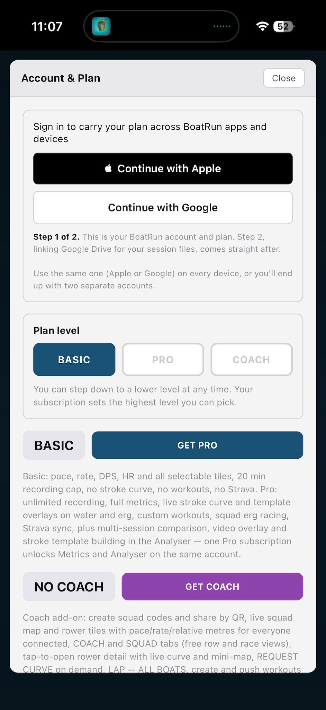
- Step 1 - your BoatRun account. Continue with Apple or Continue with Google. This is who you are. It carries your plan between your phone, a new phone and the Analyser, and anchors your free trial so reinstalling doesn't restart it.
- Step 2 - link Google Drive. Offered straight after step 1; the button reads LINK DRIVE · STEP 2 OF 2 until it's done. This is where your files go - a private, hidden folder in your own Google Drive.
When both are done the button reads Drive linked. Tap it any time to open Account & Plan: your account, the linked Apple / Google sign-ins, Sign out, and a Google Drive section with Sync now and Unlink Drive.
Why both
- Without the account a subscription bought on your phone stays on that phone, and the Analyser won't recognise it.
- Without Drive nothing syncs. Sessions live only on the phone, there is no backup, nothing comes back on a new phone, and templates, workouts, sectors and lines can't move between the app and the Analyser.
Apple and Google
Signing in with Google and with Apple separately creates two different accounts, because your Apple ID and Google account almost certainly use different email addresses. Use the same one on every device. Once signed in, Account & Plan offers Link Apple account or Link Google account - one tap, and it's a spare key to the same account. Apple sign-in isn't offered on Android.
What syncs through Drive
Everything below is shared automatically between the app, the Analyser and any other phone signed in to the same account. There is nothing to export or import. Make a change in one place and it turns up in the other.
| Item | Made or changed in | Notes |
|---|---|---|
| Sessions | App (recorded), either (renamed, favourited, deleted) | Deleting anywhere deletes everywhere |
| Workouts | App or Analyser | Workouts |
| Planned days and calendar items | App or Analyser | Calendar |
| Stroke templates | Built in the Analyser; renamed or deleted in either | Stroke templates |
| Sectors, sector PBs and targets | Drawn, edited and targeted in the Analyser; downloaded, imported or deleted in either | Sectors |
| Your lanes, dividers and hazards | App or Analyser | Lanes and hazards |
| The club lines code you follow | App | The lines themselves come from the club |
| Clubs you edit lines for | Analyser | Follows you to the Analyser on another computer. Managing club lines |
| Units, clock, calendar week start | App or Analyser | |
| Heart rate zones | App or Analyser | Heart rate |
| Curve, map and selectable tile choices | App | Display |
| Coach tile and detail metrics | App | Coach mode |
| Recent squad codes, coach's squad passwords | App or Analyser | |
| Personal bests, map style (street / satellite) | Either |
What stays on the phone
Your On Water and Ergometer grid layouts, which templates are armed, hazard WARN switches, warning and alert distances, power mode, text size, timeouts, display mode, surge axis and the last calibration. These are about this phone and this mount, so they don't follow you.
What comes from somewhere else
- Club lines - from your club's code, read-only. See Club lines.
- Squad plan - from the squad you follow. See Calendar.
- Courses - read live from boatrun.au. See Sectors and courses.
When it syncs
- Changes you make go up straight away. If you're offline they wait and go when you have signal.
- The app pulls changes at launch, when you come back to it, and when you open the Log - no more than every 5 minutes, and never while you're recording.
- The Analyser pulls when it opens. ↻ Sync with app on its start page fetches straight away.
- Every finished session uploads by itself. On a new phone, sign in and link Drive and your sessions come back on their own. You never need to sync by hand. Sync now (Drive linked → Account & Plan) is only there for when something you expect hasn't arrived.
Strava
Strava is linked separately in SETTINGS → STRAVA SYNC (Pro). Every session uploads after you finish. If your Garmin watch also uploads the row to Strava, tick Garmin watch also uploads to Strava and BoatRun adds its data to the Garmin activity instead of making a duplicate.
3. Basic, Pro and Coach
Free trial
Every new install gets 30 days of everything - Pro and Coach, granted by the app. No card, nothing to cancel. The launch screen counts down the days. Sign in and the start date is kept with your account, so reinstalling doesn't restart it.
When it expires, you drop to Basic. Nothing is deleted and nothing is locked away - all your recorded sessions, exports and raw data stay fully accessible.
What Basic gives you
- Pace, Stroke Rate, DPS and Heart Rate tiles, plus every time, distance and average tile
- 20 minute recording limit per session - a warning with 2 minutes left, then the session finishes and saves itself
- Full session log and calendar, full Drive backup
- Every export - JSON, CSV, TCX and FIT - always free
- Join a squad with a code
- Analyser single-session analysis, and the Viewer, always free
Raw data is never held hostage. If you recorded it, you can export it.
What Pro adds
Unlimited recording, every stroke metric, the live stroke curve on the water and the erg, stroke templates, custom workouts and planning them on your calendar, sectors and courses with live PB racing, lanes, dividers and hazard warnings including club lines, the Navigation tile, squad erg racing, and automatic Strava sync.
On the same account it also unlocks the Analyser: multi-session comparison, the video overlay, opening a whole squad at once, and building stroke templates.
What Coach adds
Coach includes Pro, so you don't buy both. It adds squad codes with QR and password, the live squad map and rower tiles, the SQUAD race view, rower detail with live curve, REQUEST CURVE, LAP ALL BOATS, pushing workouts and templates to the squad, the squad training calendar, squad erg races with a synchronised start, in-app video tagged to a rower, and collating every rower's session. Rowers join free with the code - one Coach subscription covers the squad. See Coach mode.
The three levels side by side
| Basic | Pro | Coach | |
|---|---|---|---|
| Price | Free | Subscription | Subscription |
| Recording length | 20 min | Unlimited | Unlimited |
| Pace, Rate, DPS, HR, time and distance tiles | ✓ | ✓ | ✓ |
| Stroke metrics (catch, impulse, accel, ratio, Char, efficiency) | - | ✓ | ✓ |
| Live stroke curve, water and erg | - | ✓ | ✓ |
| Stroke templates - use on the phone | - | ✓ | ✓ |
| Stroke templates - build in the Analyser | - | ✓ | ✓ |
| Custom workouts, water and erg | - | ✓ | ✓ |
| Calendar of completed sessions | ✓ | ✓ | ✓ |
| Plan workouts on your calendar, follow a squad plan | - | ✓ | ✓ |
| Sectors, courses and live PB racing | - | ✓ | ✓ |
| Lanes, dividers, hazard warnings, club lines | - | ✓ | ✓ |
| Squad erg race - join | - | ✓ | ✓ |
| Squad erg race - set up | - | - | ✓ |
| Strava auto-sync | - | ✓ | ✓ |
| Analyser: single-session analysis | ✓ | ✓ | ✓ |
| Analyser: comparison, video overlay, whole squad | - | ✓ | ✓ |
| COACH role - squad map, tiles, detail, lap all, curves | demo only | demo only | ✓ |
| Push workouts and templates to the squad | - | - | ✓ |
| Squad training calendar | - | - | ✓ |
| In-app video tagged to a rower | - | - | ✓ |
| Create squad codes, passwords, QR | - | - | ✓ |
| Join a squad with a code | ✓ | ✓ | ✓ |
| All exports, Drive backup, Viewer | ✓ | ✓ | ✓ |
One subscription covers the app and the Analyser on the same account. Monthly or yearly. Buy it from Account & Plan → GET PRO or GET COACH. Club and school seats can also be bought in bulk at Club Packs and redeemed with a code; a club seat shows its expiry date in Account & Plan.
Locked tiles show PRO - Upgrade to unlock rather than disappearing, so you can see what you're missing.
Plan level
Account & Plan has a BASIC / PRO / COACH picker that sets which plan the app behaves as.
- During the free trial every level is open - pick any one to see exactly how the app looks on that plan before you buy.
- After the trial you can step down at any time, but never above what you pay for. A coach who wants the rower screens can step down to PRO without cancelling anything.
4. Roles, Simple and Advanced
One app, four modes. Picked on the launch screen, changeable in HOME → SETTINGS → ROLE. You cannot change role while a recording is running - stop first.
| Role | Tab bar | What it does |
|---|---|---|
| ROW | LIVE · CURVE · MAP · INTERVALS · HOME | Full recording, all metrics, stroke curve |
| COX | LIVE · CURVE · MAP · INTERVALS · HOME | Same as Row, with the accelerometer flipped for a bow-facing cox |
| ERG | ERG · CURVE · SQUAD · INTERVALS · HOME | Reads a Concept2 PM5 over Bluetooth. SQUAD only appears once you've joined a squad. See Erg mode. |
| COACH | COACH · SQUAD · INTERVALS · HOME | Live squad map and rower tiles. No recording of your own. See Coach mode. |
Row, Cox and Erg all broadcast to a squad if connected. Coach receives. A coach who wants to row picks ERG (or ROW) like anyone else - the Coach plan still gives them the squad workout and squad start buttons on the erg.
Simple and Advanced
ADVANCED is the full app described in this guide, and is what new installs start in. SIMPLE is a stripped-back version:
- Pace, Rate, DPS and HR tiles. In portrait two more tiles sit underneath - time of day and average pace to start with. Every tile can still be changed on the live screen.
- No stroke-analysis tiles, stroke templates, workouts or Navigation tile.
- No DISPLAY or WORKOUTS tab on HOME, and no MAP, INTERVALS or SQUAD tab.
- Only the ♥ HR chip and Start before you row. On the erg, Simple adds Load Workout and Connect Erg.
Switch in HOME → DISPLAY → Screen Settings → DISPLAY MODE. While you're in Simple the DISPLAY tab is hidden, so the switch also sits at the top of HOME → SETTINGS. Coach role always uses Advanced. Your recorded data is identical in both.
5. Mounting the phone CHANGED
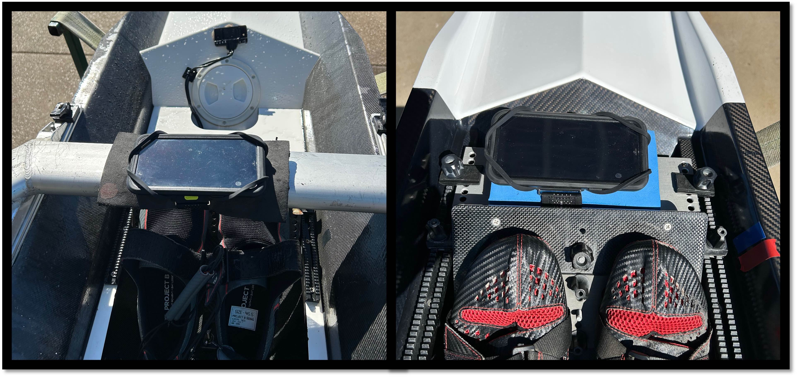
Orientation
Portrait or landscape both work. What matters is that the phone is flat, screen up, facing the stern (toward the rower), and rigidly attached to the hull. Newer phones (iPhone 15 and newer, and most recent flagship Android handsets) have dual-band GPS, which tracks noticeably better. Signal reflected off water, carbon fibre and metal fittings degrades GPS; a rubber foam mat under the mount helps, particularly on older phones.
- Portrait - the app uses the Y axis for surge
- Landscape - the app uses the X axis for surge
The surge axis is set to AUTO: it follows the screen, and switches if you rotate the phone. You don't have to tell it anything. Only if the AX pill reads wrong, force it in SETTINGS → SYSTEM SETTINGS → SURGE AXIS (LANDSCAPE or PORTRAIT).
In landscape, if the phone is turned the wrong way round the app shows ⚠ FLIP PHONE 180° across the top. Turn it round.
Calibration - automatic
There is no calibration step. From the moment the app opens it keeps a record of the phone's movement. When you press Start it picks the quietest 8 seconds of the last minute and uses them to set the stroke-detection threshold, the mount angle and the rowing axis. It fine-tunes again when you start rowing, and at every stop (no strokes for 15 seconds and nearly stationary).
- For the best start: mount the phone, sit still for a few seconds, then press Start.
- If the boat was never still (the crew was already paddling), it uses the last good calibration from this phone, or sensible defaults, and corrects itself at your first stop.
- Moved the phone, changed its angle or switched boats? Nothing to do - just sit still for a few seconds before Start.
Tilt
Flat is best. The app compensates for mount angle, but less reliably the further you go.
- 0–10° - no meaningful loss of accuracy
- 10–30° - works, accuracy degrades gradually
- Over 30° - not supported; the surge signal gets mixed with heave and metrics become unreliable
Cox mode
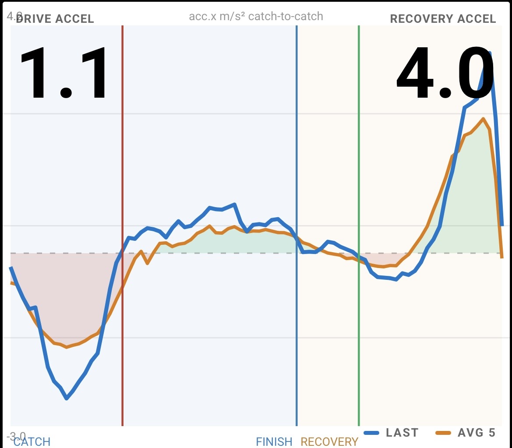
In Cox role the phone faces the bow instead of the stern. If you forget to select Cox, the giveaway is an unusual stroke curve like this one.
Position in the boat
Closest to the rigger gives the strongest stroke signal. Anywhere rigid is workable. What ruins it is a mount that flexes or rocks - any movement between phone and hull corrupts every accelerometer metric, and a mount that wobbles near stroke frequency corrupts stroke ratio and Stroke Char in particular.
6. The live screen
The pre-start chips
Before you press Start, the top of the LIVE screen shows a row of chips - each one a thing you might want connected before you push off. Tap a chip to set it up.
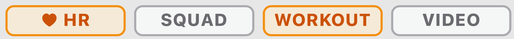
| ♥ HR | Connect your heart rate strap. See Heart rate. |
| SQUAD | Connect to a squad code. See Joining a squad. |
| WORKOUT | Load a saved workout, or build a quick one. See Workouts. |
| SQUAD WKT | Erg only, Coach plan only - push a workout to the whole squad. |
| VIDEO | Show the Video Sync code to your camera. See Video Sync. |
| Colour | Meaning |
|---|---|
| Grey | Off. |
| Green | Connected and ready. |
| Amber | You used it last session, or asked to be prompted, but it isn't ready now. |
Press Start with an amber chip and the buttons along the bottom swap to that connect button plus Start Anyway, so nothing covers your tiles. Once you start, the chips make way for the time of day, distance and workout step. Tap the time or the distance to choose what each one shows.
The status pills
Top left, in portrait or landscape:
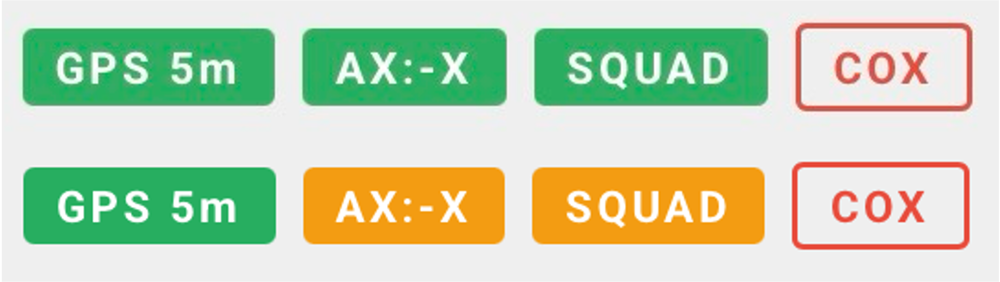
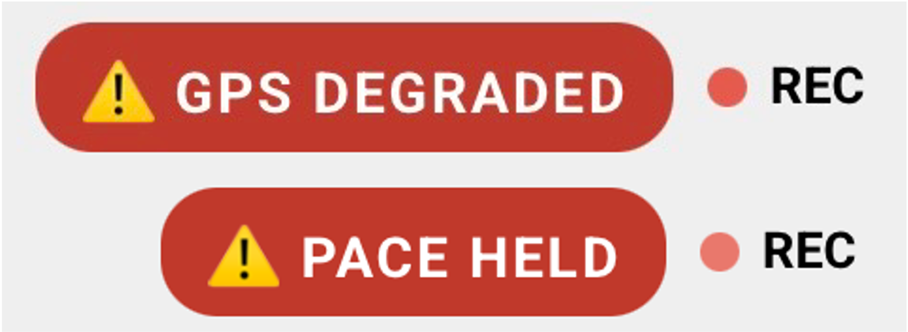
| GPS | Shows the current accuracy in metres. Green = good fix. Orange = worse than 8 m. Red = worse than 25 m, pace suppressed. |
| ACC | Red means no accelerometer available - reopen the app. |
| AX | The surge axis - POR (portrait) or LAN (landscape). Reads AX:? until you start. Orange = detected but not locked. Green = locked, stroke detection live. |
| SQUAD | Orange when connected but no one is watching. Green when the coach or spectators are watching. Tap it to manage the squad link. |
| COX | Only shows in Cox role. |
| 📝 NOTE | The loaded workout has a note. Tap to read it. |
| GPS DEGRADED | The app cannot check its speed reading against your position track, so pace, distance and DPS can't be trusted at that moment. Clears itself within a few strokes once the phone has a clear view of the sky. |
| PACE HELD | A single GPS fix jumped more than 30% from your last good pace, which no boat can do. The app shows your last good pace instead. Clears within about 6 seconds. |
Top right are the power button (see Power and battery), the LOCKED / UNLOCKED tile lock, and the REC light while you are recording.
The tabs
LIVE
Your tile grid. Change a tile right here - tap it while the tile lock reads UNLOCKED, or hold it while recording. Whole grids are set up in DISPLAY.
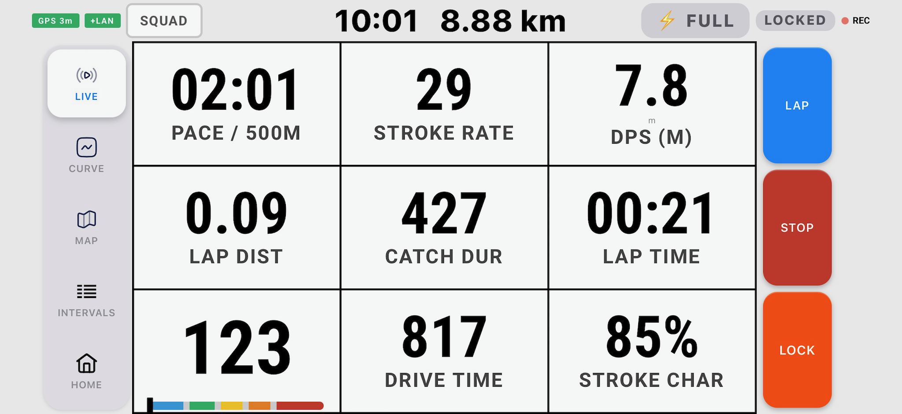
CURVE (Pro)
The acceleration curve for one full stroke, catch to catch. Last stroke in blue, 5-stroke rolling average in orange. Green fill above zero acceleration, red below. Three figures sit on the curve, each a 5-stroke rolling median:
- Drive Accel, top left - peak acceleration during the drive
- Recovery Accel, top right - peak acceleration during the recovery
- Catch Accel, bottom, a third of the way in - peak deceleration at the catch. This one reads negative
Four tiles underneath - tap each to choose its metric. TEMPLATES at the top and the coloured pills in the corner are your stroke templates - see Stroke templates.
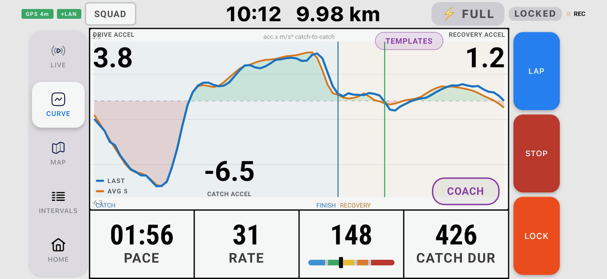
MAP
Where you are. The map turns to match your heading, shows your squad if you're connected, and draws your sectors, lanes, dividers and hazards. Tiles sit underneath in portrait, and beside it in landscape - tap any one to change it. Choose the landscape arrangement in DISPLAY → Map Display. SAT / MAP switches between satellite and street.
Near a lane or divider a readout box shows the distance and an arrow to it - top right in Row, bottom right in Cox. See Lanes on the water.
INTERVALS
The workout's steps and per-interval results as you complete them. WORK ONLY hides warmup, rest and cooldown rows.
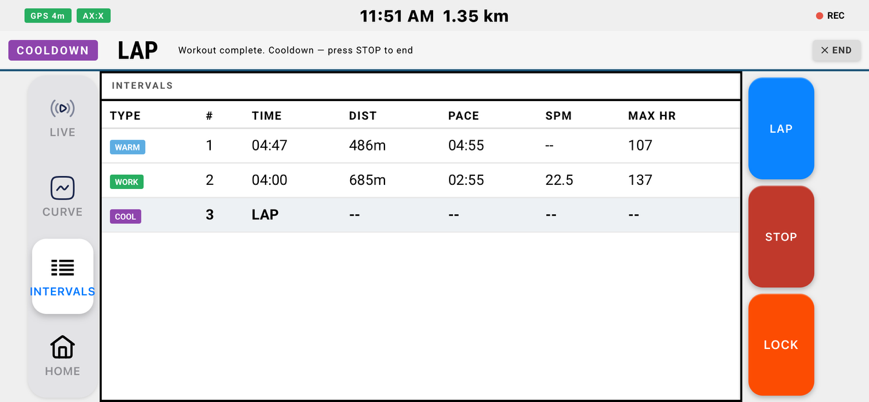
7. Recording a session
Starting - when the clock actually begins
Pressing START puts the app in a ready state rather than starting the clock, so time spent tied up or backing down doesn't land in your session. Three things release it, whichever comes first:
- You move about 20 metres from where you pressed START.
- You pick up speed - two GPS readings above walking pace.
- You take two strokes. The quickest, and the only one that backdates the clock a couple of seconds so the first stroke belongs to the session.
Laps
Tap LAP to mark a split. Each lap records time, distance, pace, rate and HR.
| Blue - LAP | Normal split, or advance to the next workout step. Takes effect the instant you press it. |
| Light blue - LAP READY | Pressing will split and arm ready mode. Offered whenever the boat is sitting still, or when the next workout step waits for rowing. |
| Light green - READY | Ready mode is armed. The lap clock is held until you start rowing. |
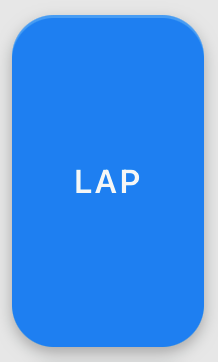
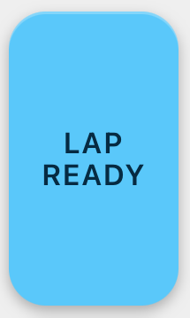
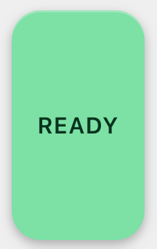
Ready mode
Press LAP READY while sitting at the start. The previous lap closes; the new one does not begin. It starts on its own after two strokes at a real rate, backdated about 2 seconds. A single bump won't trigger it. Press the green READY button to start the lap immediately instead.
The lap summary
After each lap a card shows the lap's time, distance, pace and rate. A green bar counts down until it closes.
- Tap the card to close it early.
- Drag the round handle on the bar to change how long it stays up - the full bar is one minute, and where you drop it becomes the new timeout.
- Or set it in DISPLAY → Screen Settings → LAP SUMMARY TIMEOUT, 0–60 seconds (default 6). 0 turns the summary off.
The sector result card works the same way - see Sectors and courses.
Protecting the screen from splashes
Use the LOCK button to stop water changing screens. You'll need to unlock to press LAP, change tabs or finish. For more protection, use Guided Access on iPhone (triple-click the side button) or Screen Pinning on Android.
Stopping and finishing
STOP pauses, RESUME continues, FINISH ends and saves. Name the session, or tap NO NAME. The app autosaves regularly; if it closes mid-session (battery, crash, anything) the recording is recovered next time you open it.
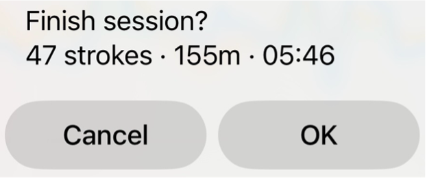
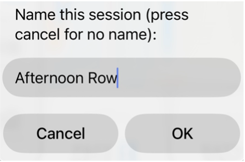
8. Display: layouts and tiles CHANGED
Where: HOME → DISPLAY (Advanced only - hidden in Simple and in Coach role)
DISPLAY is laid out as six big buttons. Tap one to open it underneath; tap again to close. Only one is open at a time.
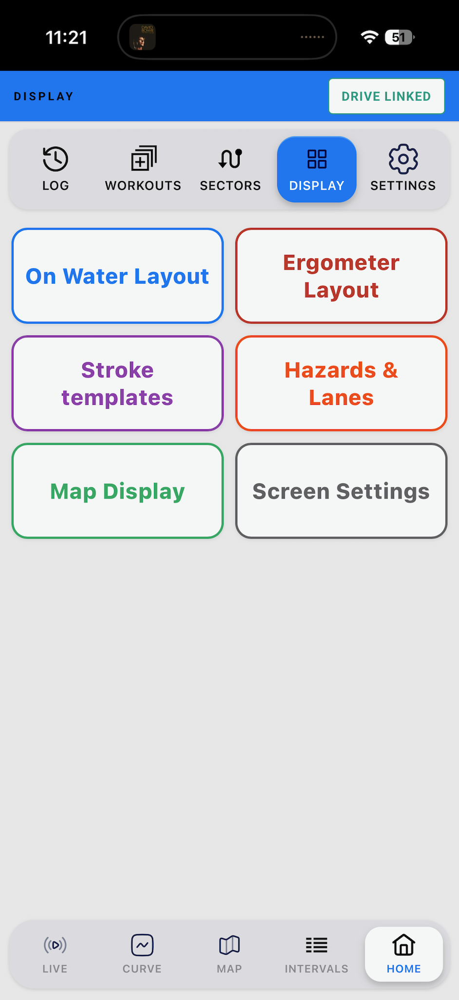
| Button | What it sets | See |
|---|---|---|
| On Water Layout | The LIVE tile grid for Row and Cox | below |
| Ergometer Layout | The ERG tile grid | below |
| Stroke templates | Templates on this phone, and which are armed | Stroke templates |
| Hazards & Lanes | Your lines, warning distances, club lines | Lanes, dividers and hazards |
| Map Display | How the MAP tab is arranged in landscape | below |
| Screen Settings | Display mode, text size, lap and sector timeouts | below |
On Water and Ergometer layouts
There is now one on-water layout and one erg layout - no named profiles to switch between. Each holds a separate grid for LANDSCAPE and PORTRAIT; rotate the phone and the grid swaps. The erg layout only offers tiles the PM5 can feed.
- Tap On Water Layout or Ergometer Layout.
- Pick a grid size for each orientation.
- Tap a box in the preview and choose its metric from the list.
Grid sizes - landscape: 3×3, 3×2, 2×2, 2×1, 1. Portrait: 2×4, 2×3, 2×2, 1×2, 1.
You can also change any tile on the LIVE screen itself: unlock the tile lock and tap a tile, or hold a tile while recording. Changes made there show in DISPLAY too.
Starting layouts
| Layout | Portrait | Landscape |
|---|---|---|
| On Water | 2×4 - pace, rate, DPS, catch dur, impulse, HR, workout, time/distance tile | 3×3 - pace, rate, DPS, HR, catch dur, impulse, recovery loss, workout, time/distance tile |
| Ergometer | 2×3 - stroke length, HR, workout and three time/distance tiles | 3×2 - the same six |
The tile list
Every tile picker - in DISPLAY, on the LIVE grid, under the curve and on the map - uses the same list, grouped by colour. Pairs sit side by side, so a live figure and its last-lap version are next to each other.
| Group | Tiles | Plan |
|---|---|---|
| Pace | Pace, average pace, lap pace, last lap pace (erg: split pace, speed) | Basic |
| Rate | Stroke rate, lap rate, last lap rate (erg: recovery time) | Basic |
| Distance | Total, lap and last lap distance, DPS (erg: stroke length, projected and last split distance) | Basic |
| Time | Time of day, total, lap and last lap time (erg: projected and last split time) | Basic |
| Stroke | Catch Dur, Drive Time, Stroke Ratio, Stroke Char, Positive and Negative Catch Slope, Catch Accel, Impulse, Recovery Loss, Vel Efficiency, Drive Accel, Recovery Accel | Pro |
| Power (erg) | Watts, average power, peak and average force, drag factor, calories, cal/hr, work per stroke | Basic |
| Other | Heart rate (Basic), Workout / Sector (Pro), Navigation (Pro), empty |
The Workout / Sector tile shows the current workout step, or the armed sector - see Sectors. The Navigation tile shows the same lane, divider and hazard readout as the map, on whatever tab you're on - see Lanes on the water. METRIC DEFINITIONS at the bottom of SETTINGS explains every metric; so does the Metrics reference.
Map Display
Chooses how the MAP tab is arranged when the phone is in landscape. Portrait always shows the map with four tiles underneath.
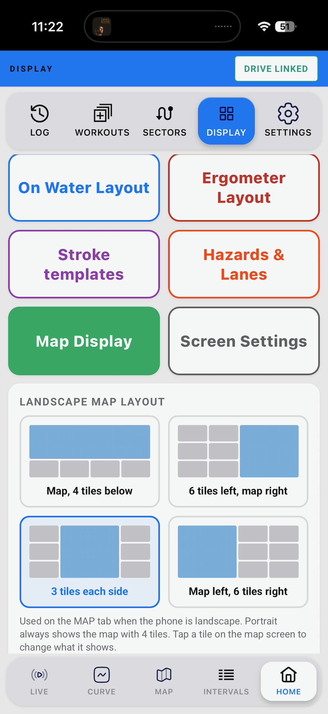
| Map, 4 tiles below | Same as portrait. |
| 6 tiles left, map right | Two columns of three tiles, map on the right. |
| 3 tiles each side | Map in the middle. The starting choice. |
| Map left, 6 tiles right | Map on the left, two columns of three tiles. |
The map's tiles are shared with the CURVE tab's four tiles; tiles 5 and 6 only appear on the landscape map layouts. Tap a tile on the map screen to change it.
Screen Settings
| DISPLAY MODE | SIMPLE or ADVANCED. See Simple and Advanced. |
| TEXT SIZE (HOME SCREEN) | STANDARD or LARGER for everything on HOME. |
| LAP SUMMARY TIMEOUT | 0–60 s, default 6. 0 = off. |
| SECTOR RESULT TIMEOUT | 0–60 s, default 10. 0 = off. |
Units, clock, surge axis and target beeps are in SETTINGS → SYSTEM SETTINGS - see Settings reference.
9. Stroke templates (Pro) CHANGED
A stroke template is a target stroke shape built from your own best strokes. It is drawn as a dashed line behind your live curve, continuously re-timed to whatever rate you're rowing, so you can see straight away where your stroke differs from the one you want.
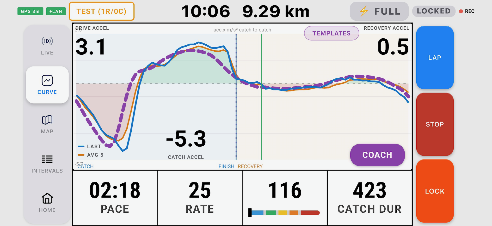
The workflow: build it in the Analyser → tap Save → it arrives on your phone by itself → arm it → tap its pill on the curve. No files to move.
1. Build it in the Analyser
You need a session with steady pieces at the rates you want - for example a rate ladder at 18, 22, 26, 30 and 34. The Analyser and the phone must be signed in to the same account with Drive linked.
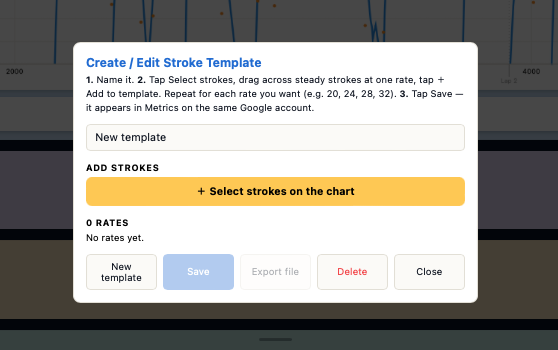
- Open the session. In the Curve Comparison pane, open the STROKE TEMPLATE drop-down and choose ＋ New template…. The Create / Edit Stroke Template panel opens. Type a name.
- Add a rate. Tap the yellow ＋ Select strokes on the chart. The panel closes and a yellow bar across the top shows the template's name and the rates it has so far. On the Stroke Chart, drag across at least 3 steady strokes at one rate, then tap ＋ Add to template · 24.0 spm (it shows the rate of what you selected).
- Repeat for each rate you want - for example 20, 24, 28 and 32. Adding a rate within a quarter of a stroke of one already in the template replaces it. Tap Done on the yellow bar to go back to the panel.
- Check the rates. The panel lists each rate with its drive % and stroke count. × removes one. Already pinned some curve groups? Or add a curve group you already pinned lets you add those instead.
- Preview. Drag the PREVIEW AT … SPM slider. Grey is the curves you recorded, purple is what the phone will draw at that rate, green dashed is the finish. Above your highest rate the drive is held at its recorded length and only the recovery shortens.
- Save. Tap Save (it changes to Saved ✓). The template goes to your Drive and appears on your phone the next time the app syncs - straight away when you next open the app.
- On-water and erg never mix. A template takes the kind of the first strokes you add - accelerometer curves from a boat, or PM5 force curves from an erg.
- The STROKE TEMPLATE drop-down lists every template open here and every one already on your phone (through Drive), plus Open template file… and ＋ New template…. Pick one to make it the active template. Edit reopens the panel; Close puts it away. "· unsaved" means changes not yet saved.
- Check it against a curve: pin a curve group (drag a selection, ＋ Add to curves), then tap its pill to show that curve on its own with the active template drawn over it at the same rate. Tap the pill again, or Show all curves, to go back.
- With several templates open, the panel's EDITING row shows them; the yellow one is the one you're editing.
- Export file saves a template file to send to someone. Delete removes the template from the phone too.
- Not signed in to Drive? Save downloads a template file instead, which you can import on the phone.
- Open template file… opens a file someone has sent you. If you're signed in to Drive it is sent to your phone as well.
- Creating templates needs Pro. Coach accounts can open and view them.
2. On the phone
Where: HOME → DISPLAY → Stroke templates
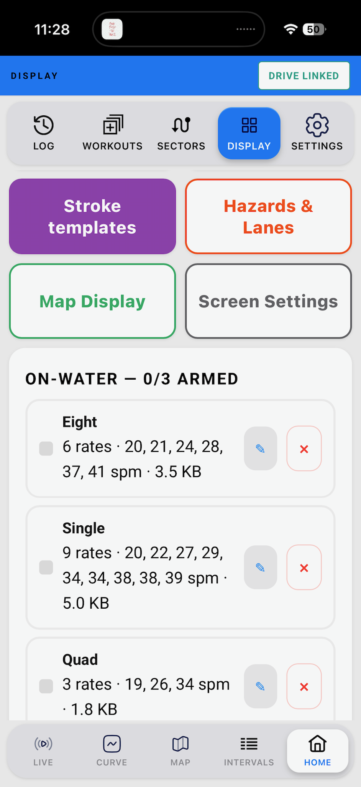
Templates that have arrived are listed under ON-WATER and ERG, each headed with how many are armed (for example 2/3 ARMED). Each row shows the rates it covers and its size.
- Tap a template to arm or release it. Up to three on-water and three erg can be armed, kept separately. Each armed one gets its own colour.
- ✎ renames it; × deletes it. Both sync back to the Analyser and your other phones.
- IMPORT TEMPLATE… adds a template file someone has sent you. It then syncs like any other.
- The total size on the phone is shown underneath; it turns orange when it's getting large - delete ones you don't use.
3. On the curve
Each armed template is a coloured pill in the bottom-right corner of the CURVE tab. Tap a pill to draw that template, tap again to take it off. The dashed line is the same colour as its pill. TEMPLATES at the top of the curve opens the same arm/release list without leaving the curve. Only the matching kind is ever drawn: on-water templates on the Row and Cox curve, erg force templates on the Erg curve.
Templates from your coach
If you're connected to a squad, your coach can push a template to your phone. It arrives as an extra purple pill labelled COACH and takes over while it's there. Tap it off if you don't want it - your coach sees that you've hidden it. Leaving the squad removes it.
Templates are boat-class specific. A single scull template means nothing in a quad or an eight. Build one per boat class.
10. Heart rate
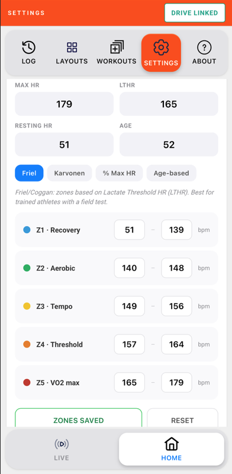
BoatRun connects directly to a Bluetooth heart rate strap - Polar H10, Garmin HRM, Wahoo, anything speaking standard BLE heart rate. Connect it with the ♥ HR chip on the live screen (or Connect HR at the bottom). That is the only place to pair it.
Connect before you press Start. Once the app knows the strap it reconnects automatically on later sessions, but do the first pairing on dry land.
HR appears as its own tile with a zone bar, is recorded into the session, exports in TCX and FIT, and charts in the session detail and the Analyser.
Zones are set in SETTINGS → HR ZONES: max HR, LTHR, resting HR and age, then a model - Friel/Coggan LTHR zones, percentage of max HR, or age-predicted. They sync through Drive to the Analyser.
On the erg, pair the strap to the PM5 instead - see Erg mode.
11. Power and battery
The button at the top right of every live and coach screen cycles through three power modes. Tap it to step to the next.
| Button | What it does |
|---|---|
| ⚡ FULL | Light screen, everything updating at full rate. Best to read in direct sun. |
| ☾ SAVER | Dark screen. On an OLED phone black pixels use almost no power, so this is a real saving for nothing. |
| ☾ MAX SAVER | Dark screen, and the display updates less often - tiles every 2 seconds, the curve every 5, the map every 6, the squad race once a second. |
Only the display is slowed. Sensors, stroke detection, GPS, recording, lap timing and every alert - including hazard warnings - run exactly as normal in all three modes.
The choice is remembered. Erg keeps its own setting; Row, Cox and Coach share one.
Overheating
On iPhone, if the phone reports it is overheating in the sun, a ⚠ PHONE OVERHEATING banner counts down 15 seconds before switching to the dark screen, which makes far less heat than white at full brightness. DARK NOW switches straight away; CANCEL stays light. If it gets very hot the graphs also slow down. The light screen comes back by itself once the phone cools.
Battery tips
- A squad link uses the most battery of anything. Leave it disconnected unless your coach needs you live - you can still Send to squad from the log afterwards.
- Screen brightness is the next biggest drain. Turn it down, or use SAVER.
- Start long sessions at full charge, and carry a battery pack for long mornings.
12. Workouts (Pro)
Where: HOME → WORKOUTS, the WORKOUT chip, and the Analyser
On-water and erg are two separate sets
Every workout belongs to one venue or the other, and you only see the set that matches what you're doing. Erg ones carry a red ERG badge. Coach mode sees both and switches with ON WATER / ERG. Drag the grip on a card to reorder your list.
Workouts sync through Drive: build or edit one in the Analyser on a big screen and it's in the app's list; build one on the phone and it's in the Analyser.
If a workout is planned for today it shows at the top of the list with a green LOAD button. Workouts copied from a squad plan carry a small yellow dot.
Built in
Race 1000m - open warmup until LAP pressed → 1000m work → open cooldown until you press STOP.
Baseline: Rate Ladder - open warmup → 4 × [1 min 24, 1 min 26, 1 min 28, 1 min 30, 4 min rest] → open cooldown. The last rest is skipped.
Erg: 6 × 500m / 3min - the erg-set default, pushed straight to the PM5.
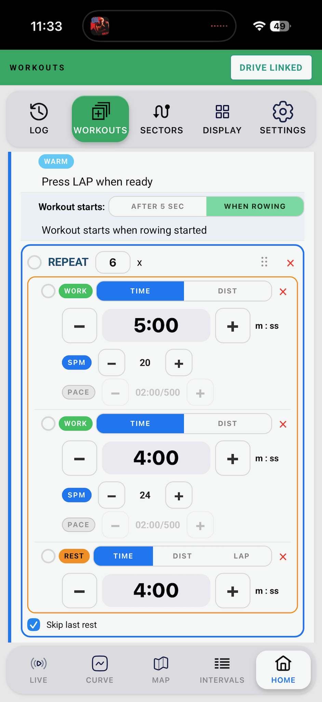
Building your own
+ NEW WORKOUT → name it → add steps with the coloured buttons underneath.
Notes - an optional box under the name. Whatever you write (or your coach writes) shows when the workout is loaded, and stays available from the 📝 NOTE pill on the live screen.
An on-water workout always opens with a WARMUP and ends with a COOLDOWN. Erg workouts have neither.
| Step | What you set |
|---|---|
| WARMUP | Nothing. Runs until you press LAP. |
| WORK | TIME or DIST, then the value. Optional targets underneath - tap SPM and/or PACE to switch each one on, then set it. |
| REST | TIME, DIST, or LAP for an open rest that only ends when you press LAP. |
| COOLDOWN | Nothing. Runs until you press STOP. |
Every value can be nudged with − and + or typed straight in - m:ss for times, plain metres for distances. ▲▼ move a step; × deletes it.
Start - one choice for the whole workout
| AFTER 5 SEC (blue) | Press LAP at the end of the warmup and a 5-4-3-2-1 countdown starts the first work step. |
| WHEN ROWING (green) | Ready mode. The lap button offers LAP READY during the warmup, then waits on green READY until you are actually rowing. |
Repeats
Tick two or more adjacent steps and ↻ REPEATS appears. Give it a count and they become a repeat block. Tick Skip last rest if you don't want the final rest (on-water only).
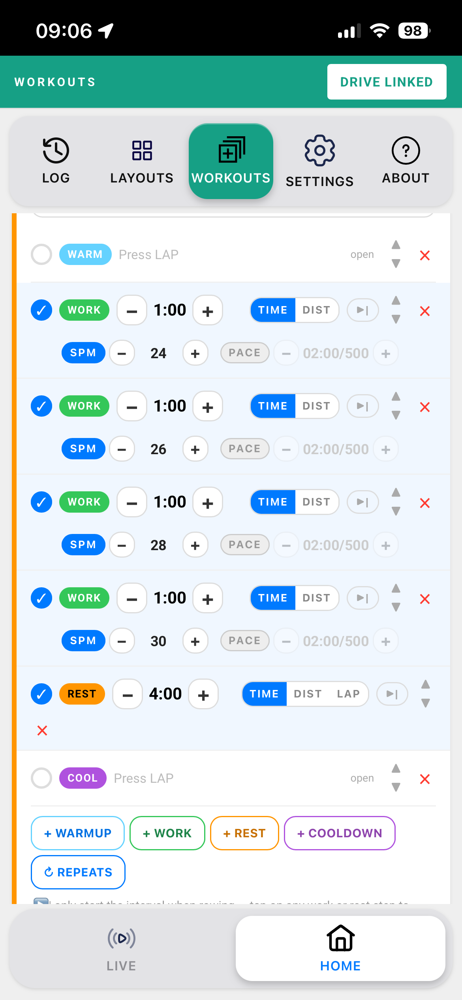
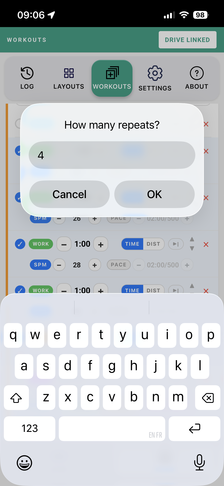
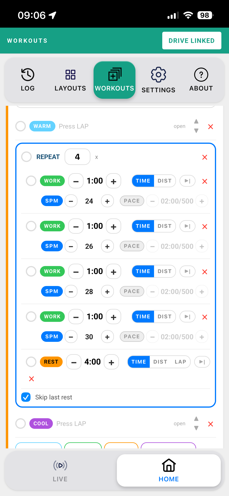
Loading one from the live screen
The WORKOUT chip opens LOAD WORKOUT: a straight distance, a straight time, a set of identical intervals with rest, or a list of different intervals - plus your saved workouts, each with a green LOAD button. Give a quick one a name to save it, or leave the name blank to run it once. In Coach mode the button reads SEND TO SQUAD.
During the workout
The workout step and the time or distance remaining show across the top of the live screen, on the Workout tile, and on your coach's screen. END beside the step stops the workout without stopping the session. A 5-second countdown with a tone comes before each work interval (phone volume up and off silent), and a lap summary appears at the end of each one.
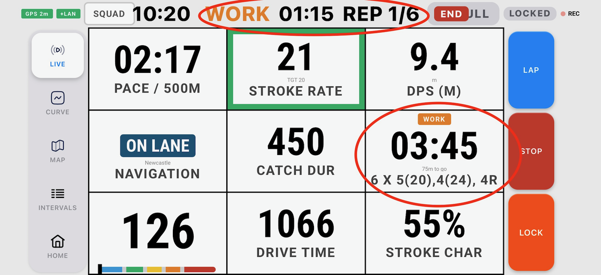
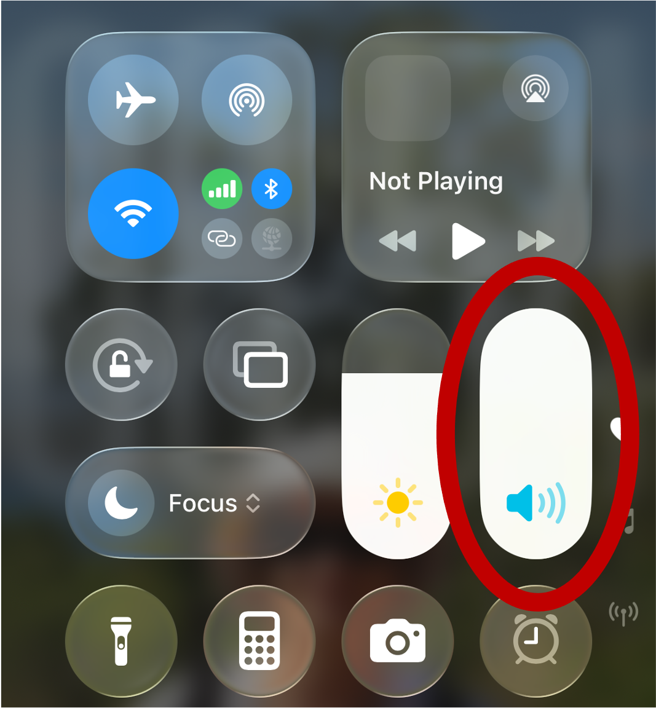
Target colours and beeps
In a work step with a rate or pace target, the Rate and Pace tiles turn green on target, amber when close and red when off. After 5 seconds in the red it beeps:
- Rate - short beeps. Pace - long tones.
- Two high - rate too high, or pace too fast. One low - rate too low, or pace too slow.
Turn the beeps off in SETTINGS → SYSTEM SETTINGS → WORKOUT TARGET BEEPS. The colours stay.
13. Calendar and planning CHANGED
Where: HOME → LOG → CALENDAR, and the Analyser start page
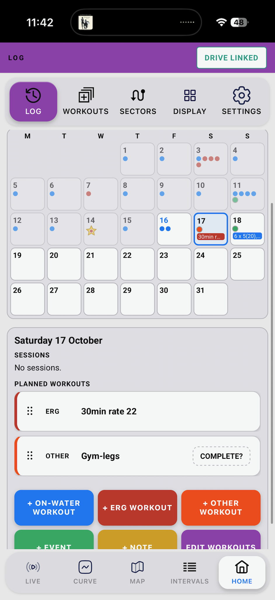
The calendar
- Every session sits on its day - blue dots for on-water, red for erg, a star on favourites.
- Planned workouts show alongside. Ones from a squad coach carry a yellow dot.
- ‹ › move a month, TODAY comes back, and tapping the month name jumps to any month or year.
- Tap a day to see its sessions and its plan underneath. Tap a session to open it.
- Which day the week starts on is set in SETTINGS → SYSTEM SETTINGS → CALENDAR WEEK STARTS. The Analyser follows it.
Planning a day (Pro)
Tap a day, then + ON-WATER or + ERG to add one of your workouts to it (or make a new one from the picker). You can also add a note, an event or another kind of workout. DETAILS shows a planned workout with EDIT; COMPLETE? ticks an item off; swipe left to remove. Planning is easier still on the Analyser's calendar - it's the same plan, shared through Drive. See Analyser: calendar and planning.
On the day, when you open the app, a SUGGESTED WORKOUT card pops up with a LOAD button for each workout planned for today. Tap one, or NOT NOW. It only offers on-water workouts when you're rowing and erg workouts when you're on the erg, and never pops up mid-session.
Calendar settings - the ⚙ button
The ⚙ at the top of the Log calendar opens Calendar settings, with two parts.
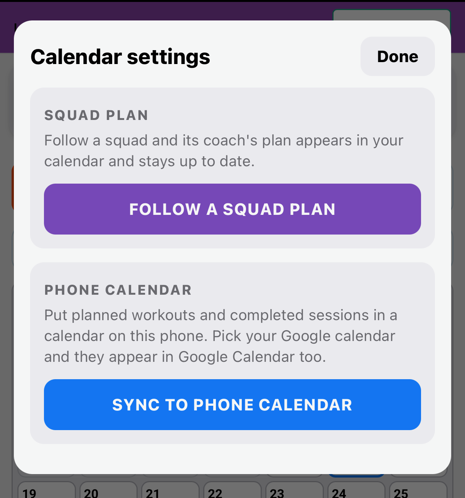
Squad plan (Pro)
Your coach can plan the squad's training on a squad calendar. Tap FOLLOW A SQUAD PLAN and pick the squad from your recent codes, or type the code. CHANGE picks a different squad; STOP stops following (workouts already copied stay).
The coach's plan, from today on, is copied into your calendar when the app opens and every 30 minutes after that. Days the coach changes are brought into line; your own planned workouts on those days are left alone. You don't need to be connected to the squad - it doesn't use the live link or its battery, and it doesn't have to be the squad you row with live.
Phone calendar
Tap SYNC TO PHONE CALENDAR and pick a calendar on the phone.
- Planned workouts become all-day events. Completed sessions become timed events with a link that opens the session in the Analyser.
- Pick your Google calendar and they appear in Google Calendar too. (On iPhone, if none is listed, add your Google account in the iPhone Settings app under Calendar → Accounts.)
- SYNC COMPLETED EVENTS and SYNC PLANNED EVENTS switch each half on or off. CHANGE CALENDAR moves them.
- It's one-way: BoatRun owns these events and keeps them up to date. STOP SYNCING CALENDARS removes them.
Planning for a squad (Coach)
In the Analyser, switch the calendar from Mine to Squad, enter the squad code, and plan the squad's days with your workouts. Every rower following that squad gets the update. For a longer block, 🗓 Planning ↗ opens a bigger planning window. See Analyser: calendar and planning.
14. Sectors and courses (Pro)
Where: HOME → SECTORS (SECTORS and COURSES), and the Analyser
A sector is a timed stretch of water between a start line and a finish line. Row through it on any session and BoatRun times you automatically, keeps your PB, and races you against it live.
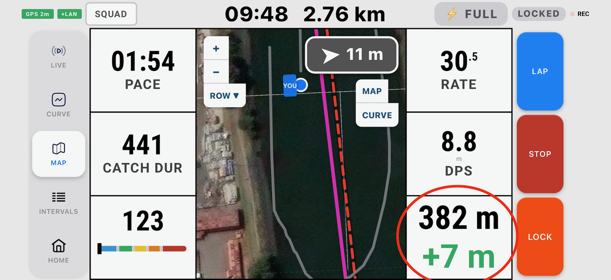
Getting sectors
- Make your own in the Analyser - ✎ Draw it straight on a satellite map, or open a session and use ＋ Create Sector to pick a start and a finish on the track you rowed. Create, edit and delete sectors in the Analyser; they arrive on the phone through Drive. See Analyser: sectors.
- Download a course - SECTORS → COURSES lists ready-made courses from boatrun.au, by area, on a map. DOWNLOAD adds it to your sectors (you must be signed in with Drive linked). The list is read live from the website, so new courses appear without an app update. Browse them on the Courses page too.
- Import sector file - at the top of the SECTORS list, for a file someone has shared.
Some areas on the COURSES list also carry the Lanes & hazards for that water, shown in their own card with an ADD button. Downloading a course that carries lines adds them to your lines automatically. See Lanes, dividers and hazards.
The SECTORS list
- Show live sectors - switches the ARM / SKIP pop-up and live sector times on or off.
- Each sector shows your best. Tap it for its PB and results, and a map.
- PRE-ARM - see below.
- Swipe a sector left to DELETE it - from the phone and the Analyser. Needs Drive.
Rowing a sector
- Row towards the start, heading the right way. As you approach, a pop-up asks ARM or SKIP.
- Once armed, the Workout / Sector tile becomes the sector tile: metres to the start on top, your PB in the middle, the sector name at the bottom.
- Cross the start line - a trill sounds and the clock starts. The middle line now shows metres ahead or behind your PB; the top shows metres to the finish, measured along the reference line.
- Cross the finish - another trill, and the result card shows your time and how it compares.
Pre-arm - tap PRE-ARM on a sector before you go. It then arms itself every time you approach the start (no pop-up), and re-arms if you turn round behind the start line. Ideal for hands-free head racing and repeat pieces.
Sectors are never shown while a workout is running. If you wander too far off the line, stop for too long or turn back, the attempt is dropped as off-track.
The result card
Stays up for the time set in DISPLAY → Screen Settings → SECTOR RESULT TIMEOUT, 0–60 seconds (default 10). 0 turns it off. Tap CLOSE to close it early, or drag the handle on its countdown bar to set a new timeout, exactly like the lap summary.
Afterwards
Every attempt is kept with the sector. A session's detail lists the sectors you rowed through with time, pace, rate and PB. The Analyser lists your sector times for each session with your best, and plays two attempts back side by side on the track from the start-line crossing. Changing a sector's course clears its results; the Analyser then offers to re-time your past sessions (Scan all).
15. Lanes, dividers and hazards (Pro) CHANGED
Where: HOME → DISPLAY → Hazards & Lanes, and the Analyser start page
Mark your river's traffic lanes, keep-clear dividers and hazards once. BoatRun draws them on your map and the coach map, shows how far you are from the nearest one, and warns you before you hit something. They are not timed.
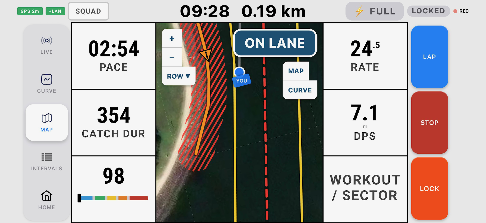
| Type | On the map | What it does |
|---|---|---|
| LANE | Yellow line with direction arrows | One-way, in the order you drew it. Stay on it. Alerts if you drift further off than your off-line alert distance, or row it the wrong way. |
| DIVIDER | Dashed red line | Pass on either side, keep clear of it. Alerts if you get closer than your off-line alert distance. |
| HAZARD | Orange triangle (a point) or orange line, inside a red hatched warning zone | A post, a buoy, a sandbank, a wall. Warns when your course will pass within your hazard warning distance in the next 10 seconds. |
The Hazards & Lanes screen, top to bottom
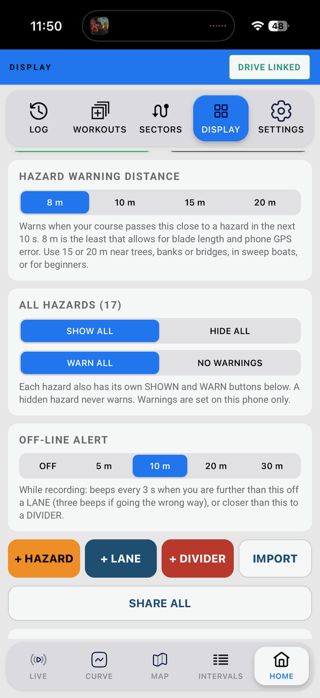
- HAZARD WARNING DISTANCE - 8, 10, 15 or 20 m (default 10).
- ALL HAZARDS - SHOW ALL / HIDE ALL and WARN ALL / NO WARNINGS, for your own and your club's hazards at once.
- OFF-LINE ALERT - OFF, 5, 10, 20 or 30 m (default 10), for lanes and dividers.
- + HAZARD, + LANE, + DIVIDER and IMPORT. SHARE ALL appears once you have two or more lines.
- CLUB LINES - see Club lines.
- Your lines, one card each.
Drawing a line
Tap + HAZARD, + LANE or + DIVIDER. A full-screen map opens.
- Tap the map to add points, in order. The first point is green and the last red.
- Lane - draw it in the direction you row it; the arrows follow your order.
- Hazard - one tap for a point (a post, a buoy), more taps for a line (a sandbank, a wall).
- UNDO removes the last point, CLEAR removes them all, SAT / MAP switches imagery. Pinch to zoom. Your other lines are shown faintly for reference.
- Type a name and tap SAVE.
Easier on a computer. The Analyser draws on a big, sharper satellite map, lets you drag points, can trace a line from a session's GPS track, and can save straight to your club. See Analyser: lanes and hazards.
Each line's card
| WARN / NO WARN | Hazards only. Switches that hazard's warning on or off on this phone. A hazard must be SHOWN to warn. |
| SHOWN / HIDDEN | Takes it off the maps without deleting it. A hidden line never alerts. |
| LANE → / DIVIDER / HAZARD | Change its type. A single point can only be a hazard. |
| EDIT | Reopens the map to move, add or remove points, or rename. |
| SHARE | Sends a line file another BoatRun user can IMPORT. |
| DELETE | Removes it - from this phone, the Analyser and your other phones. |
Warning distances and zones
Two separate distances decide when you're warned. Neither is shown as a number on the water - they decide when the readout turns red and when the beeps start.
| Hazard warning distance | Off-line alert | |
|---|---|---|
| Applies to | Hazards | Lanes and dividers |
| Choices | 8, 10, 15, 20 m (default 10) | OFF, 5, 10, 20, 30 m (default 10) |
| Triggers when | Your course in the next 10 s passes within this distance | Further than this off a lane, or closer than this to a divider |
| Works | Whenever the boat is moving, recording or not | Only while recording and moving |
| Shown on the map as | A red hatched zone: a circle round a point, a band along a line | Not drawn |
Why the hazard minimum is 8 m: blade tips reach about 2.8 m (sculling) to 3.5 m (sweep) from the phone on the centreline, and phone GPS is typically 3–5 m out. Use 15 or 20 m near trees, banks or bridges, in sweep boats, or for beginners. The red zone on the map grows and shrinks with the setting, so you can see exactly how much room you're giving yourself.
On the water
There are three places you see your lines while rowing. None of them work in Erg or Coach role (the coach map still draws the lines).
| Map readout | A box on the MAP tab - top right in Row, bottom right in Cox - with an arrow to the nearest line and the distance. |
| Navigation tile | The same box as a tile, so you can see it on LIVE or CURVE. Add it from the Other group in any tile picker. |
| Hazard warning card | A large orange card in the middle of the screen, on every live tab, whenever a hazard warning is active. |
Lanes and dividers
Within 150 m of a lane or divider the readout appears, with an arrow pointing at the line as it sits on the map on your screen.
- Blue - nearest line is a lane. Grey - nearest is a divider.
- ON LANE - within 3 m of the lane, going the right way.
- WRONG WAY - on a lane, going against its arrows.
- Red with a yellow border - outside your off-line alert distance.
Off-line beeps - while recording and moving, BoatRun beeps every 3 seconds when you're too far off a lane or too close to a divider: two beeps normally, three if you're going the wrong way. Divider beeps are higher pitched than lane beeps.
Hazards
Whenever the boat is moving faster than walking pace - recording or not - BoatRun projects your course 10 seconds ahead. If that course passes within your hazard warning distance of a shown, warning hazard:
- The orange ⚠ HAZARD card appears with a large arrow, the distance in metres, the seconds to it, and its name.
- The map readout and Navigation tile turn orange with the same distance and seconds.
- The phone vibrates, and four rapid high beeps sound every 2 seconds until you're clear.
Hazard warnings take priority over the lane readout.
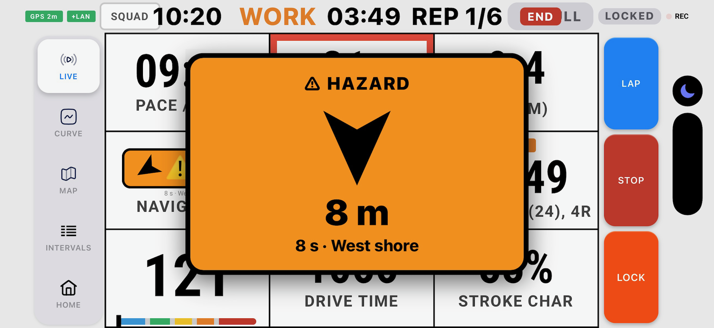
Reading the arrow - phone facing the stern. The warning card's arrow is drawn as you, the rower, see it: down = ahead of the boat (behind you), left = starboard, right = port. The map readout's arrow instead points at the hazard as it sits on the map. Turn the volume up and take the phone off silent - the beeps are the warning you'll actually notice.
Club lines
Your club can publish one shared set of lanes, dividers and hazards under a club code. The club's editors draw and manage them in the Analyser - see Managing club lines. To get them on your phone, type the club code into CLUB LINES and tap FOLLOW. Following needs no password.
- The club's lines appear alongside your own, and update automatically (checked every 5 minutes) whenever the club changes them. A toast tells you when they've changed.
- Hide any single club line with SHOWN / HIDDEN, and switch club hazards' warnings with WARN / NO WARN.
- REFRESH fetches the latest now; LEAVE stops following.
- Club lines are read-only on your phone - your own lines stay yours. The code you follow syncs to your other phones.
- The phone follows one club at a time.
Syncing and sharing
- Your own lines sync through Drive to the Analyser and your other phones. Warning distances and WARN switches stay on this phone.
- SHARE / SHARE ALL make a line file to send to someone. IMPORT adds the lines from a file, skipping any you already have. The Analyser's Share and Import use the same files.
- Courses can carry lines - see Sectors and courses. A course file is built in the Analyser with Course file.
Lines are an aid, not a lookout - read Limitations and warnings.
16. Erg mode
BoatRun talks to a Concept2 PM5 over Bluetooth. The phone is a second screen and a recorder - it is not measuring anything itself. No GPS, no accelerometer, no calibration. Every number comes off the monitor.
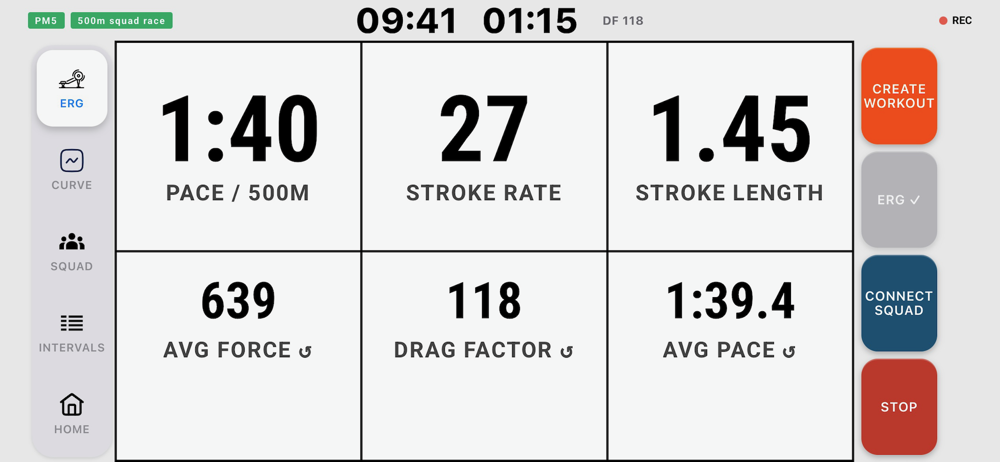
Governing principle: wherever the PM5 supplies a value, BoatRun displays it as-is. If your erg screen and phone screen disagree, that is a bug worth reporting.
Connecting
CONNECT ERG on the erg live screen, or HOME → SETTINGS → ERGOMETER (CONCEPT2 PM5) → CONNECT TO ERG.
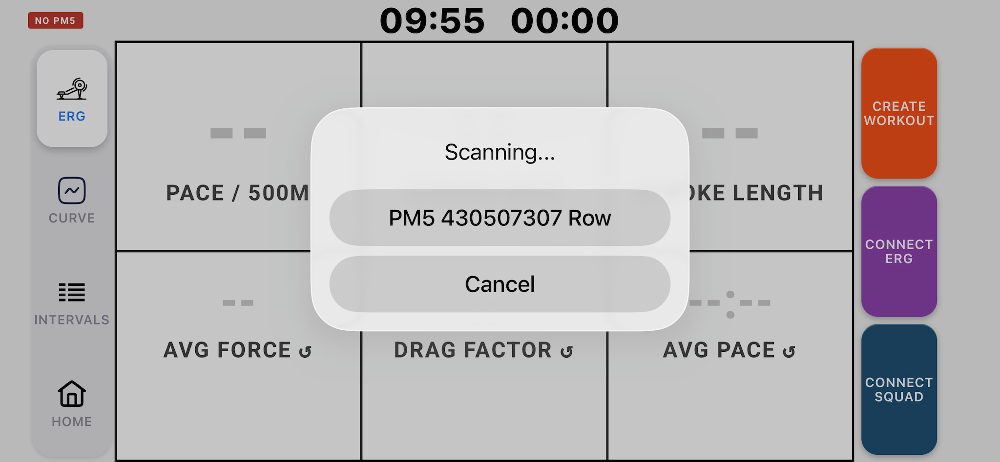
- Wake the PM5 first - press any key or take a stroke. A sleeping monitor won't be found.
- Tap CONNECT TO ERG and pick your PM5.
- Once connected the PM5 pill turns green and the drag factor (DF) shows in the header.
Heart rate - pair the strap to the erg, not the phone
On the erg go to Menu → More Options → Utilities → Heart Rate and select your strap there. BoatRun reads heart rate through the erg, and the ♥ HR chip turns green. Once the PM5 has seen your belt, BoatRun asks the erg to re-pair it on later connects.
What's on screen
Distance follows your km/mi setting, with erg km shown to three decimals so every metre counts. Erg tiles are instantaneous values; cumulative and averaged figures (average pace, splits, projections) are in the time and distance groups of the tile list. Set the grid in DISPLAY → Ergometer Layout.
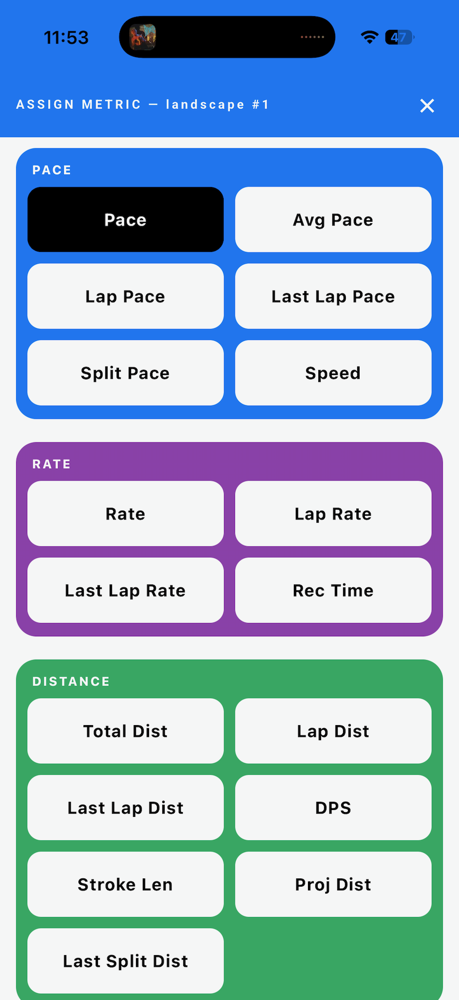
The CURVE tab on the erg
The PM5's own drive force curve, drive phase only, with the stroke characteristic (where peak force falls within the stroke). Erg templates draw over it - see Stroke templates. Force data is only requested while the CURVE tab is open, so it doesn't slow everything else.
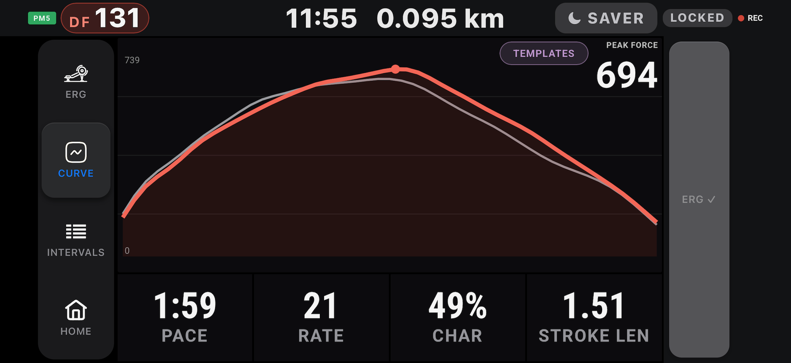
Workouts
Load a workout with the WORKOUT chip and it is pushed onto the monitor. From then on the PM5 owns the timing. Workouts programmed on the erg itself are read back and tracked in INTERVALS.
Limitation: a new workout programmed on the erg is only picked up once the monitor is back at its ready state.
The SQUAD tab - racing
Join a squad with the SQUAD chip. A SQUAD tab then appears. Joining a squad race needs Pro; setting one up needs Coach.
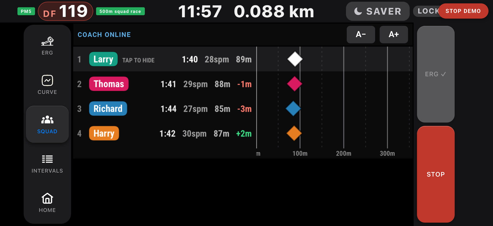
- Warm up however you like, then press menu to finish your warmup. You MUST be on the MENU to receive the workout.
- Your phone shows WORKOUT LOADED.
- The coach starts everyone together with a count-in.
During the race the SQUAD tab shows a simulated track with every rower's boat, name, pace, rate and gap in metres. Tap your own name to hide yourself (you also lose sight of their gaps; the coach still sees everything). A− / A+ change the text size.
A rower on the Coach plan can run the race from their own erg with the SQUAD WKT chip (or the squad workout and squad start buttons); their own machine arms and starts with everyone else.
Erg data afterwards
Erg sessions save, sync and export like any other. The Analyser shows the PM5 force curves in newtons.
17. Joining a squad
Tap the SQUAD chip on the live screen, or open HOME → SETTINGS → CONNECT SQUAD.
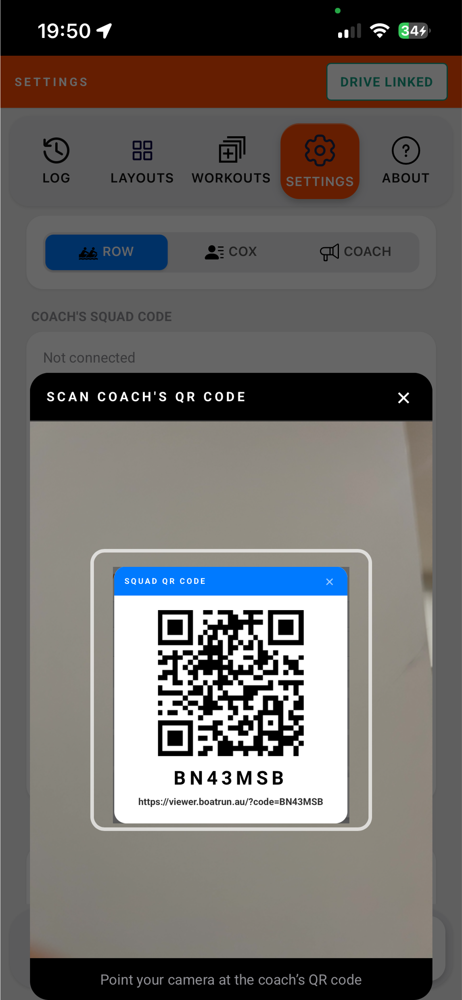
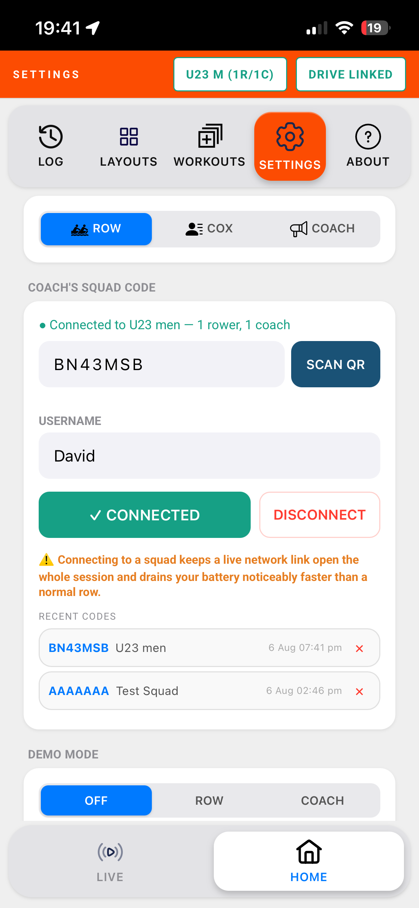
- Enter the code from your coach, tap one of your recent codes, or SCAN QR.
- Enter your name - the one your coach sees.
- CONNECT.
The coach sees your location and name straight away, and your data once you press Start. Advanced metrics and the stroke curve are only sent if you're on Pro. Your coach can send you workouts and templates and press lap for you. SHOW QR lets a crewmate scan the code off your phone.
PROMPT TO JOIN SQUAD (in CONNECT SQUAD) opens the squad box for you - ON WATER as soon as the app opens on the live screen, ON ERG as soon as the PM5 connects, ALWAYS, or NEVER. Skipped if you're already in a squad.
Battery: a squad link stays open all session and uses noticeably more battery, especially when your coach is watching your curve. If you don't need to be watched live, don't connect - you can Send to squad from the log afterwards. Where phone reception is unreliable the live link may not work at all; recording carries on regardless.
AAAAAAA is an open test squad - no password, and sessions uploaded to it are deleted from the cloud after 7 days.
Following your squad's training plan is separate and doesn't need the live link - see Calendar and planning.
18. Coach mode CHANGED
Set role to COACH on the launch screen or in Settings.
Coach mode needs the Coach plan (included in the free trial). Without it, tapping COACH opens the Coach upgrade instead. The COACH demo runs on canned data so you can see it first.
Setting up a squad
Where: HOME → SETTINGS → CREATE A NEW SQUAD
- Enter a squad name. Rowers see the name, not the code, and only the first 5 characters fit their status pill - keep the start short.
- Optionally set a password.
- Tap GENERATE for a new 7-character code.
- CREATE SQUAD.
- Give the code to your rowers, or SHOW QR for them to scan. The same QR opens the Viewer for spectators.
SQUAD PASSWORD locks reading the squad - the coach live view and the Analyser. Rowers still join and upload without it. Anyone with the code and password sees the squad's live positions and squad-sent sessions, so use a password, or a new code each term.
The coach tabs
| Tab | Header reads | Best for | What you see |
|---|---|---|---|
| COACH | FREE ROW | Steady state, technical work, crews doing their own thing | One tile per rower with rate, pace and your chosen metrics, coloured by state. Tap a tile for detail. |
| SQUAD | FREE ROW upright, RACE MODE sideways | Pieces, races, intervals started together | Phone upright: every crew listed with pace and rate, in the same order as the COACH tiles. Phone sideways: a ranked race panel: a simulated track with every crew, ordered by who's furthest ahead, with lap distance and metres ahead or behind. Relative position resets at each new interval. Tap a name for detail. A− / A+ change the text size. |
| INTERVALS | After a piece | Every rower's intervals - see below. | |
| HOME | LOG, WORKOUTS, SECTORS, SETTINGS. DISPLAY isn't used in Coach role. |

The old FREE ROW / RACE switch in the header has gone - the tab you're on decides.
The coach screen
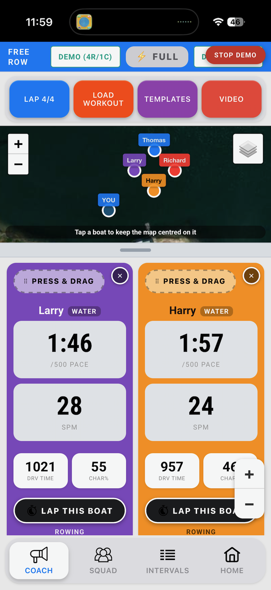
Buttons: LAP ALL BOATS, LOAD WORKOUT, TEMPLATES, VIDEO and Connect Squad. In landscape these stack down the right edge and the tabs down the left, leaving the middle for the boats.
Map - every connected rower as a labelled dot, your own position separately, with your sectors, lanes and hazards drawn on. Tap a boat to keep the map centred on it. Drag the bar under the map to make it taller or shorter.
MAP / STROKE CURVES - switches the top strip between the map and a list of live stroke curves, one per rower you've requested, each with its rate and pace. Drag the scale bar on the right to change the curve height.
Rower tiles (COACH tab) - name, big rate, big pace, plus whichever metrics you choose. Hold a tile to open OVERVIEW TILE METRICS: tap metrics to add or remove them, drag the list at the top to reorder, ALL / NONE. Metrics tagged ERG or WATER only show on the rowers they apply to. + / − scale the grid; drag a tile to reorder; × removes a tile from the screen.
What each boat's colour means
One press of LAP ALL BOATS starts a boat sitting in ready mode, splits a boat that is rowing, and does nothing to a boat that is stopped. So each tile is coloured by its state:
| Their own colour - ROWING | Under way. A lap splits them. |
| Light orange - REST | In a rest interval. |
| Light blue - LAP READY | Waiting at the start with ready mode armed. A lap starts them. |
| Light green - LAPPED · READY | Your lap landed and put them into ready mode. |
| Green - LAPPED | Your lap landed while they were rowing. Holds for 5 seconds. |
| Grey - STOPPED | Paused, finished, or not moving yet. A lap does nothing. |
| Grey - NO SIGNAL | Nothing heard for 25 seconds. |
The LAP ALL BOATS button takes the colour and wording of what most of the squad is doing, with a count - LAP 4/4, LAP READY 3/4, LAPPED · READY 4/4. A first number below the second means somebody is different or has dropped off. If the squad is split, tapping asks you to confirm and names who is in which group.
Rower detail
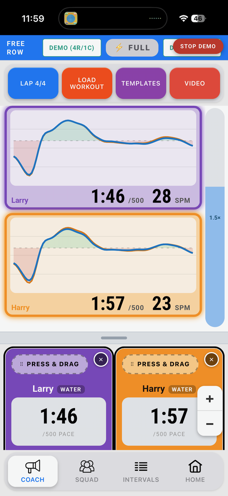
Tap a tile or a name. Full metrics, live stroke curve, laps, and VIDEO and LAP buttons for that one boat. ⛶ opens the curve full screen. Hold any metric to open DETAILED VIEW METRICS and choose which ones show and in what order.
REQUEST CURVE asks that rower's phone to stream its stroke curve for the time set in STROKE CURVE REQUEST LENGTH (SETTINGS → CONNECT SQUAD), 5–60 seconds. Longer is smoother, and costs them more battery.
VIDEO records a clip tagged to that rower and that moment, ready to drop onto their session in the Analyser. Set the save folder in SETTINGS → SYSTEM SETTINGS → VIDEO - CHOOSE VIDEO FOLDER, then FOLDER ONLY or FOLDER + PHOTOS (also keeps a full-quality copy in Photos). A cloud-synced folder is best.
Templates to the squad
TEMPLATES pushes one of your stroke templates to the squad, or hides templates on their phones. It arrives on each rower's curve as a COACH pill. You see if a rower has hidden it. See Stroke templates.
Running a squad piece on the water
Build the workout with AFTER 5 SEC for a running start, or WHEN ROWING for standing starts. LOAD WORKOUT → SEND TO SQUAD. When you want to finish the warmup and start the piece, tap LAP ALL BOATS.
With WHEN ROWING, crews must be stationary for at least 10 seconds first. Watch the button: you want LAP READY n/n - every boat stopped and armed. After your lap lands it turns LAPPED · READY n/n until they row away.
Running a squad erg race
- Rowers warm up, then all must be on the erg's main menu.
- LOAD WORKOUT - build the piece or pick a saved one.
- PUSH TO SQUAD - every connected erg is armed.
- The button becomes START - n/n LOADED, amber until all are ready.
- Tap START for a synchronised count-in.
The INTERVALS tab
Every connected rower's intervals as they complete them. Refreshes every 30 seconds, or tap ↻ REFRESH. × or CLEAR SHOWN only removes results from the display - nothing is deleted. They're collated into a squad session in your log; a new one starts after a 3-hour break or a change from water to erg. Open them in the Analyser under COACH SESSIONS.
Squad training calendar
Plan the squad's week on the Analyser's calendar in Squad view. See Calendar and planning.
Coach settings
- CONNECT SQUAD, CREATE A NEW SQUAD, SQUAD PASSWORD - in SETTINGS.
- STROKE CURVE REQUEST LENGTH - in CONNECT SQUAD.
- Video folder - SETTINGS → SYSTEM SETTINGS → VIDEO.
- Power button - Coach shares the Row/Cox power mode. The coach's phone drains fastest of all, so SAVER is worth using.
- Plan level - step down to PRO in Account & Plan for the rower screens without cancelling.
Battery - read this
| Rower's situation | Sends every |
|---|---|
| Not rowing | 60 seconds |
| Rowing, coach not detected | 30 seconds |
| Rowing, coach online | 9 seconds |
| Coach has requested the stroke curve | 3 seconds |
| Start, stop, lap, or lap from the coach | Immediately |
Expect up to double the usual battery use for a long squad session. Start at 100%, use SAVER, carry a battery pack.
19. Demo modes
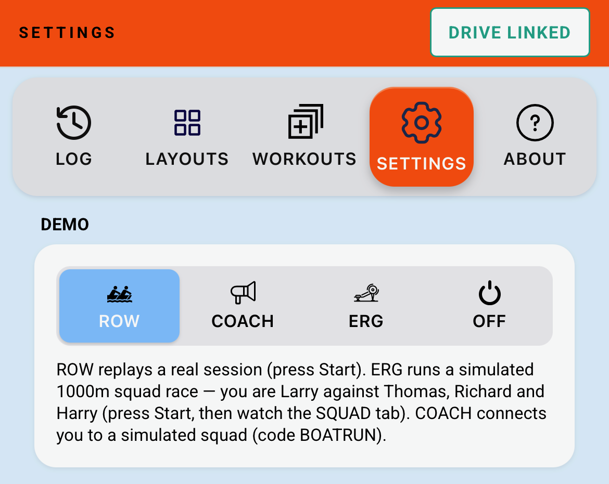
The TRY A DEMO buttons on the launch screen, or HOME → SETTINGS → ROLE → DEMO. A red END DEMO button stays in the top corner the whole time.
ROW demo - replays a real recorded session. Every tile, the curve and the metrics behave as on the water. Use it to set up your layout or check a workout.
COACH demo - a simulated squad on code BOATRUN: four rowers generating live data. The map, tiles, detail views and curve requests all work.
ERG demo - a simulated erg session with relative positions on the SQUAD tab.
- Demo sessions are never uploaded.
- Ending the demo puts you back in the role you were in.
20. Session log and exports
Where: HOME → LOG - two views, CALENDAR (see Calendar) and SESSIONS
SESSIONS is the full list, newest first. Filter with All, On water, Erg, Squad (coach) and ★ favourites. Tap the star on a card to make it a favourite. Each card shows Synced once the Drive copy is confirmed, or Awaiting Sync. Tap a card to open it; swipe it left to reveal DELETE.
Session detail
Summary cards, colour-coded by what affects them - green independent, blue boat-dependent, red condition-dependent. Then lap tables, workout intervals, the sectors you rowed through, and charts for every metric.
RENAME names the session (the Drive copy updates too). Analyser ↗ opens it in the Analyser.
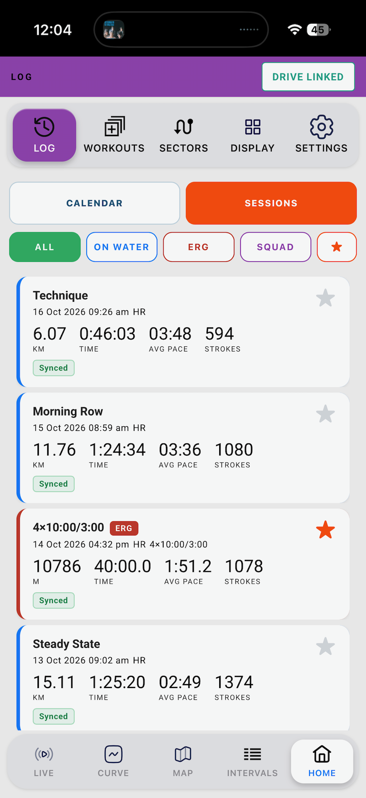
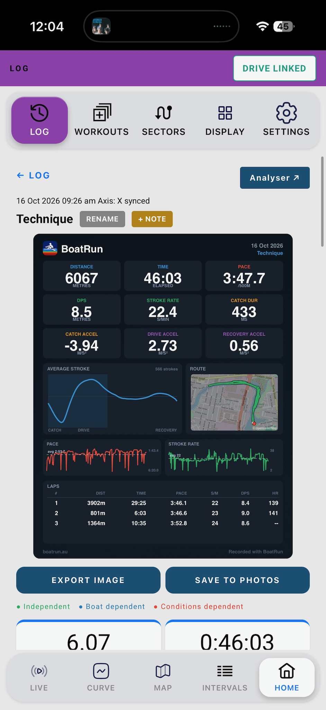
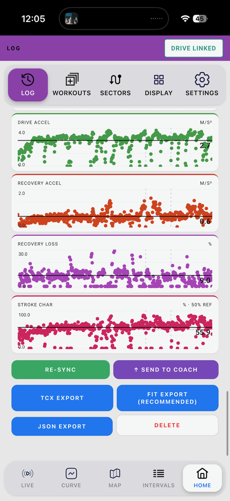
Exports
| Button | What you get |
|---|---|
| Send to squad | Uploads the session to your squad so your coach can open it in the Analyser. Works after the row without a live link. |
| TCX Export | Standard training file. GPS track plus heart rate. |
| FIT Export (Recommended) | Same destinations as TCX, better fidelity. Use Chrome rather than Safari to import FIT to Garmin Connect. |
| JSON | The complete session - every stroke, every metric. The Analyser's preferred format. |
| Delete | Removes it from this phone, your Drive and every other device. Permanent. |
All exports are free on every plan. You don't need to export to get a session into the Analyser - it's already there through Drive. Pro users who link Strava get automatic upload - see Strava.
21. Your data and storage
| Where | What's there | Who can see it |
|---|---|---|
| Your phone | Every session, full detail (older ones may be summary only - see Storage) | You |
| Your Google Drive | A copy of each session, plus everything in What syncs, in a private hidden app folder | You, and the Analyser once you sign in with the same account |
| Squad cloud (while connected) | Live rate, pace, position, and the metrics your coach has enabled | Your coach and anyone with the squad code |
| Squad cloud (Send to squad) | The full session file | Your coach and anyone with the squad code, until pruned |
| Phone calendar (if synced) | Planned workouts and completed sessions as events | Whoever can see that calendar |
| Strava (Pro, if linked) | The activity | Per your Strava privacy settings |
The Drive folder is hidden - it does not appear in your normal Drive file list, and no one can read it except you and BoatRun on your account.
SETTINGS → YOUR DATA
- STORAGE… - the safe one. Reports what BoatRun is using and offers to free space without deleting anything.
- RE-PROCESS OLD SESSIONS… - recalculates metrics in older sessions with the current version of the app.
- DELETE MY DRIVE DATA - permanently deletes every BoatRun session in your Drive. Sessions on the phone are untouched. (If Drive isn't linked, this place offers LINK GOOGLE DRIVE instead.)
- PRUNE SQUAD SESSIONS (Coach) - removes squad cloud records older than 21 days for your squad.
- DELETE MY ACCOUNT - permanently deletes your sign-in, plan record, squad membership and Drive sessions. You'll be asked twice. It does not cancel a store subscription - cancel that in the App Store or Google Play.
Freeing up space - STORAGE…
It first reports total use, how many sessions have their full copy on the phone, and how many of those are backed up on Drive versus only on this phone. Then it offers to remove the on-phone copy of sessions older than 30 days and confirmed on Drive.
Nothing is deleted. Those sessions stay in your log; open one and it downloads again (you need signal). A session that is not on Drive is never touched.
If the phone fills up anyway
BoatRun won't let full storage cost you a session. When you press FINISH it strips raw debug traces first, then frees the phone copy of already-backed-up sessions, oldest first. If there is still no room the session is held safe in an autosave slot and you're asked to free space and press Finish again - don't close the app. Unsynced sessions are never removed automatically.
Deleting a session
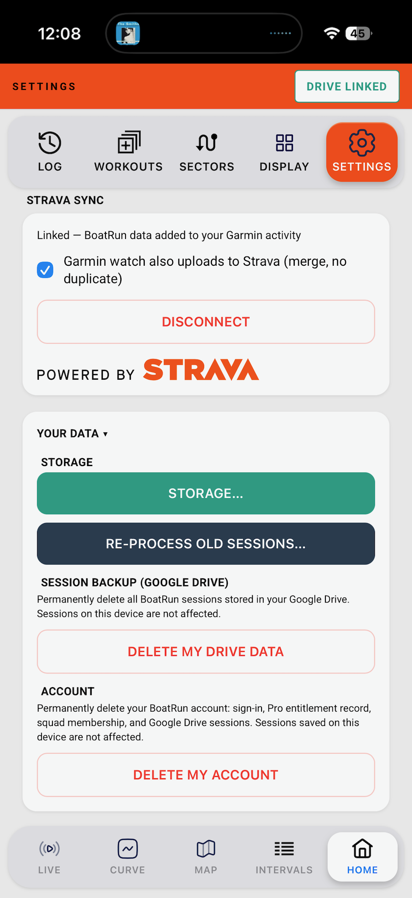
Deleting anywhere deletes everywhere. Swipe a card left in the log, or use the trash icon in the Analyser, and it goes from that device, your Drive and every other device. The confirmation names the session. There is no undo - the hidden app folder is not Drive's normal bin. Deleting looks instant; the Drive copy is removed in the background (or on next signal if you're offline). Sessions you deleted deliberately do not come back on a new phone.
Don't delete to make room. Use STORAGE… instead. Export anything you want to keep first - raw data export is free forever.
Protecting your data
- Sign in and link Drive, and check for the Synced badge.
- Export JSON after a significant session.
- Tap Finish rather than force-closing the app.
22. Analyser
The Analyser is a web page. Bookmark it and open it on a desktop for preference, or an iPad at a pinch. Nothing to install. It reads and writes the same Google Drive folder the app does, so everything in What syncs is already there.
Every pane on the page has a grip at the top. Drag the grip to move the pane up or down - the order is remembered.
Signing in
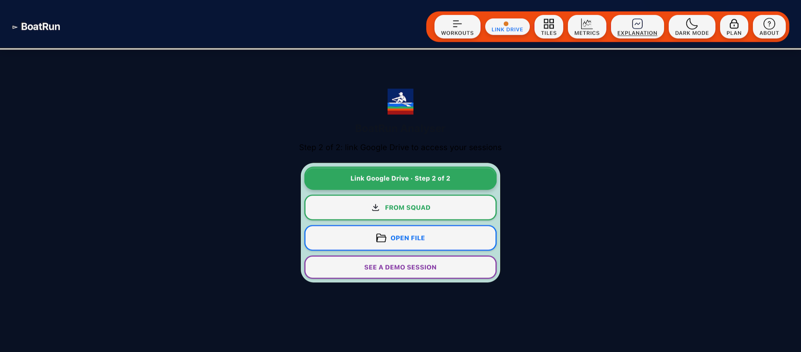
The start page walks you through the same two steps as the app: Sign in · Step 1 of 2 (the same Apple or Google you use on the phone), then Link Google Drive · Step 2 of 2. Your Pro or Coach plan comes with your account.
Other buttons on the start page:
- From Squad - sessions sent to a squad code (plus its password if it has one).
- Coach Sessions - the squad sessions your phone saved to Drive in Coach role.
- Open file - a
.json,.fit,.tcxor.csvfile. - Demo session - a sample row to explore.
- ✕ Back to session - returns to the session you had open.
The start page
Below the buttons, the start page is a set of panes:
| Sectors (Pro) | Your sectors, each with its PB, distance, pace and rate. See Sectors. |
| Lanes & hazards (Pro) | Your lines and your clubs' lines. See Lanes, dividers and hazards. |
| Summary and Personal Bests | See below. |
| Calendar | Every session and planned workout by day. See Calendar and planning. |
| Sessions | Every session, newest first. Search sessions…, and filter by ★ Favourites, Water or Erg, or sort by Date, Distance or Time. Sign out is at the top of this pane. |
Calendar and planning
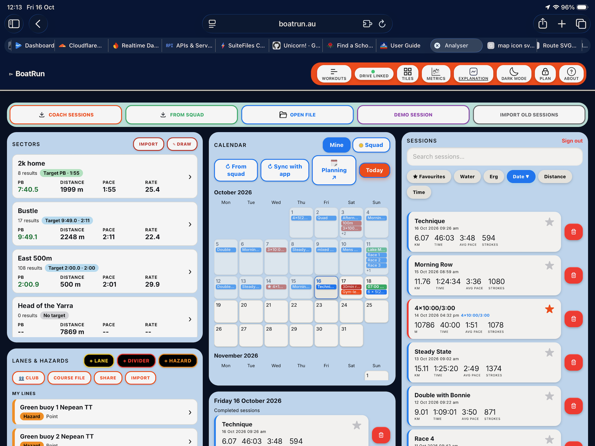
Click a session on the calendar to open it. Click a day to open that day underneath.
- Mine / Squad - your own calendar, or a squad's (enter the code).
- ↻ From squad - copies a squad's plan into your own calendar, the same as following it in the app.
- ↻ Sync with app - fetches new sessions, workouts and calendar items from Drive now.
- 🗓 Planning ↗ - opens a bigger planning calendar in its own window (see below).
- Today and ‹ › move around the months. On a wide screen the months scroll as one long strip instead.
Planning a day
Open a day, then + ON-WATER WORKOUT, + ERG WORKOUT or + OTHER WORKOUT, + EVENT or + NOTE. Drag planned workouts to change their order. The app offers each planned workout as that day's SUGGESTED WORKOUT - see Calendar and planning.
In Squad view the bar under the calendar says what you can do: Coach - you can plan workouts, or View only - import workouts to your calendar. In view-only, each workout has an IMPORT button that copies it to your own calendar.
The planning window
🗓 Planning ↗ opens a full-size calendar for laying out a block of training. Along the top:
- ⧉ Combined - your plan plus the squads you tick, on one calendar. Changes go to your own plan.
- Mine, or a squad's name - one calendar on its own.
- + Squad - adds a squad to the list. Coach plan only (it shows 🔒 otherwise).
Planning your own workouts switches on by itself once BoatRun on your phone has synced with Drive. Until then the Analyser says so - open the app, signed in with Drive linked, then come back.
Workouts
EDIT WORKOUTS (under an open day) creates, edits and reorders your workouts on a big screen. They appear in the app's WORKOUTS list. In Squad view, a coach builds the squad's workouts the same way.
Summary and Personal Bests
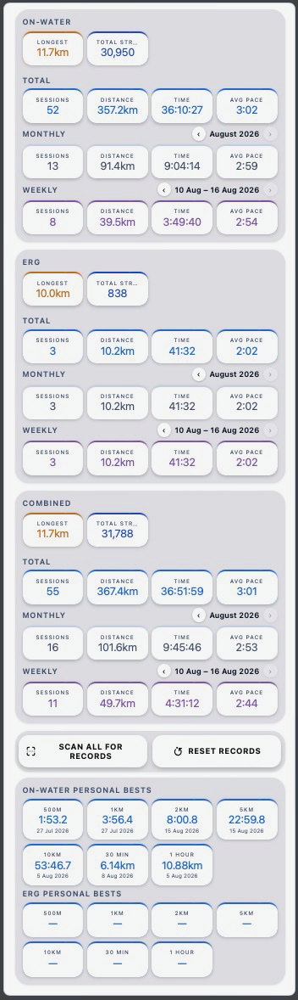
Summary - longest row and total strokes, then sessions, distance, time and average pace for all-time, a month and a week. Use ‹ › to step back.
Personal Bests - your fastest 500m, 1km, 2km, 5km, 10km, 30min and 1hour on the water and on the erg. True rolling best efforts, found anywhere in any session. Tap a PB to open the session. Scan All for Records rebuilds the table; Reset Records clears it.
Loading a session
Click any session. To load another alongside it, use Add for comparison in the menu (Pro); each session gets a tab across the top.
Units bar
Pace unit, distance and DPS sub-unit. In erg files: Pace, Watts or Calories. Synced with the app.
Summary cards
Every metric as a card, colour-coded by category. Clicking a card toggles that metric in the main chart. Tiles reorders and hides cards. Metrics opens the glossary.
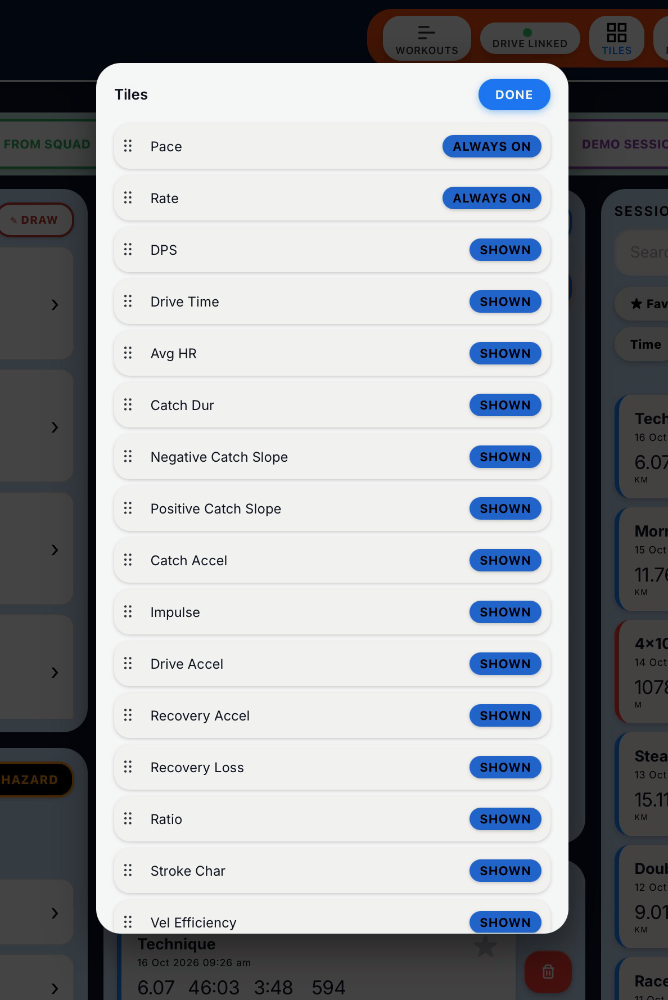
Stroke chart
- X axis - stroke number, distance or time
- Smooth - off, or 3 to 30 strokes
- Zoom and Pan - buttons, sliders, or scroll; double-click resets
- Drag across the chart to select strokes; hover or tap for values. The strip under the chart shows the selection's averages, with ＋ Add to curves and ⤢ Zoom to selection.
The overview strip above is a miniature of the whole session; drag on it to select, or drag group bands to move them.
Curve comparison
Pin up to 8 groups of strokes (from several sessions on Pro) and their averaged curves overlay on one canvas, with the integrated speed profile underneath. Pin a group by dragging a selection then ＋ Add to curves, or from a lap or sector row. Each group is a coloured pill; its × removes it. The stats table gives one column per group. Remove all curves clears them.
The curve shape comes from the accelerometer and is not affected by wind, tide or current, so comparing two different days is always valid.
Stroke templates (Pro)
The STROKE TEMPLATE drop-down sits at the top of Curve Comparison, with Edit and Close beside it. Pick a template, then tap a curve pill to draw it over that curve. Save sends a template straight to the app. Full steps: Build it in the Analyser.
Sectors (Pro)
Two ways to make a sector:
- ✎ Draw (on the start page's Sectors pane, or in a session) - a full-screen satellite map opens. Tap the start, then tap along the course to the finish, following the bends so the line stays within 100 m of where you row. Drag a point to move it, tap a turn point to delete it, long-press the line to add one. ↶ Undo and Clear as usual. Name it and tap Save sector. A sector must be at least 100 m.
- ＋ Create Sector (in a session's Sectors pane) - click the start on the session's track, then the finish.
After saving, the Analyser offers to Scan all your Drive sessions for past times on the new sector.
Tap a sector on the start page for its detail:
| PERSONAL BEST | Time, pace, rate and date. 📍 MAP shows the sector. |
| COMPARE | Plays two attempts back side by side on the track at 1, 2, 4, 8 or 16× speed, timed from the start-line crossing. |
| SHARE | A sector file another rower can import. |
| EDIT | Rename it, or reshape it on the map - drag any point including S and F, tap the map to extend the finish. Changing the course clears the sector's results and PB, then offers a rescan. |
| DELETE | Removes the sector and all its results, here and on the phone. |
| TARGET | PB or PLANNED TIME - what the phone races you against live. Syncs to the phone. |
Below that is every result, newest first, with your PB marked. Click a date to open that session.
In a session, the Sectors pane lists each sector you rowed through. Click a row to highlight it on the map and select its strokes. Sector list, Scan all, ＋ Create Sector and ✎ Draw sit in its header. See Sectors and courses for rowing them.
Lanes, dividers and hazards (Pro)
The Lanes & hazards pane on the start page lists MY LINES, then one list for each club you edit (CLUB · name · code). Everything here is the same set of lines as on your phone, synced through Drive - see Lanes, dividers and hazards for how they warn you on the water.
| + Lane, + Divider, + Hazard | Draw a new one on the map. |
| Tap a line | Reopens it to edit, move or delete. |
| 👥 Club | Create, join and manage club codes. See Managing club lines. |
| Course file | Builds a course file. See below. |
| Share | A line file with all your own lines, for another rower to import. |
| Import | Adds the lines from a line file, skipping any you already have. |
Drawing a line
A full-screen satellite map opens at your location, or where you last rowed.
- Lane / Divider / Hazard buttons along the top switch what you're drawing. The length and number of points show beside them.
- Lane - tap the map in the direction boats travel; arrows show the direction. ⇄ Reverse flips it.
- Divider - tap along it.
- Hazard - tap once for a point (a post, a buoy), or tap along it for a hazard line.
- Drag a point to move it, tap a point to delete it, long-press the line to add a point. ↶ Undo and Clear as usual.
- From session track (when a session is open) - zoom the map to the stretch of the session's track you want, then tap From session track. The line is laid along the track you rowed; tidy it up by dragging points.
- Your sectors and other lines show faintly for reference.
- Type a name. Save to: choose my lines or Save to club: …. Then Save, or Save + add another to start the next one at the same spot. Delete appears when editing.
Maps for drawing. The layer box (top right) switches between Satellite (world) and NSW aerial (sharper) - much clearer photos that show posts and buoys, NSW only - and adds Buoys & seamarks (charted buoys and beacons). Your choices are remembered. With a mouse, the pointer is a cross with a ring round it; set the ring with RING (Hidden, 10, 20, 30, 50 or 100 m) to judge distances - for example set it to your hazard warning distance.
On a session's route map, your hazards and your clubs' hazards near the track are drawn so you can see how close you came.
Managing club lines
Club lines live under a club code. Rowers follow the code on their phones and get every change. Editors manage the lines here with the club's edit password. Several editors can work at once. Tap 👥 Club.
Create a club code (Pro):
- Under CREATE A CLUB CODE, type the club name and an edit password of 6 or more characters. Tap Create.
- A 6-character club code is made, and a recovery code is shown. Write the recovery code down - it is shown only once. It resets the edit password if it's ever forgotten.
- Give the club code to rowers (to follow) and to your other editors (with the password).
Join as an editor: under JOIN A CLUB AS AN EDITOR, enter the club code and edit password, then Join.
Each club you edit has a card:
| Copy code | Copies the club code to send to rowers. |
| Move my lines in… | Tick your own lines and Move ticked lines to the club. They become club lines. |
| Set new password (Change password) | Sets a new edit password for the club. Any editor can do this; the creator's button reads Set new password. Everyone else editing must then enter the new one. |
| New recovery code | Club creator only. Shown once; the old one stops working. |
| Leave | Stops you editing here. The club lines stay for everyone else. |
| Delete club code | Club creator only. Deletes the code and all its lines for everyone. |
- PASSWORD CHANGED next to a club means someone set a new edit password. Enter it in the box on the club's card and tap Continue.
- Forgot the password? Tap Forgot the password? Use the recovery code, then enter the club code, the recovery code (XXXX-XXXX-XXXX) and a new password, and tap Reset password.
- Without Pro you can't draw or edit lines, but you can still join a club and manage its passwords.
- The clubs you edit follow you to the Analyser on another computer.
Course files
Course file builds one file holding the sectors and the lanes & hazards for a stretch of water, ready to be listed on boatrun.au/courses. Enter a course name, the area and an optional note, tick the sectors and lines to include, and tap Download course file. Send it to BoatRun to be listed; rowers then download it from SECTORS → COURSES in the app.
Video overlay (Pro)
＋ Add video for individual files, or 📁 Link video folder so clips that match the session's time are found for you. Videos you've added are listed under Videos added to this session to reopen with one click.
| Playback | ▶, ⏪ ⏩ 5 seconds, ‹ › 0.1 second, speed 0.25× to 2×, ⛶ fullscreen. Hide ▴ tucks the controls away. |
| Sync | Three ways - Code, Chart or Auto. See Video Sync. Fine-tune with Offset −0.1 / +0.1, then ✔ Save. |
| Crop | Zoom, Left/Right, Up/Down. |
| Metrics | Show, pick which metrics, and their opacity. |
| Curve | Show the live stroke curve, Avg 5 to smooth it over 5 strokes, its opacity, and a stroke template over it. |
| Export | Set Start and Finish at the current video time, or Use highlight for the strokes selected on the chart (× for the whole video). Then ⬇ WebM or ⬇ MP4 (MP4 plays anywhere, desktop browser only). Stop cancels. |
Drag the metrics and curve on the video to move them.
Filming yourself - Video Sync (Pro)
On the water: start the camera, tap the VIDEO chip, hold the phone screen close to the lens for 3 seconds, tap Done, then mount the phone and Start. Keep the camera recording.
In the Analyser: ＋ Add video, then under Sync:
- Code - ▣ Scan finds the Video Sync code at the start of the clip. The most accurate way. If it can't be read, step to the frame where the digits change, type that time (hh:mm:ss.s) and tap Use. For GoPro clips, ⛓ chains the other chapters once one is synced.
- Chart - pause the video on a catch, tap ⌖ Pick on chart, then tap the same catch on the stroke chart.
- Auto - Apply uses the time the camera wrote into the file. Reset lag clears the camera delay it has learned.
Video format: best is H.264 MP4. Avoid iPhone HEVC (.mov) in Chrome - convert it to H.264 MP4 first (QuickTime "Export As" or HandBrake).
Laps, map and stroke data
Click a lap row to zoom to it and select its strokes; ＋ Add to curves pins it. The route map shows pinned groups in their colours, your sectors, and any hazards near the track. The Sectors and Hazards buttons in the Route Map header show or hide each (filled with a ✓ = shown); your choice is remembered. The stroke table is sortable; click a row to pin a stroke.
Exporting from the Analyser
In the menu: Share JSON, Export TCX or Export FIT (Recommended).
23. Viewer
For spectators, parents and athletes waiting their turn. No install, no account, no cost.
- Open the Viewer link or the coach's QR
- Enter the squad code (BOATRUN for the demo)
- Enter the password if there is one
- CONNECT
A full-screen map with every rower updating live, and a strip of cards with name, rate and pace. + Add another squad watches more than one. ✕ LEAVE disconnects.
24. Settings reference
Settings live in three places on HOME. Collapsible cards (marked ▾) remember whether you left them open.
HOME → DISPLAY
| Button | What's in it |
|---|---|
| On Water Layout / Ergometer Layout | Landscape and portrait grids and their tiles. Layouts. |
| Stroke templates | Arm, rename, delete, IMPORT TEMPLATE…. Templates. |
| Hazards & Lanes | HAZARD WARNING DISTANCE, ALL HAZARDS, OFF-LINE ALERT, your lines, CLUB LINES. Lanes and hazards. |
| Map Display | Landscape MAP tab arrangement. Map Display. |
| Screen Settings | DISPLAY MODE, TEXT SIZE (HOME SCREEN), LAP SUMMARY TIMEOUT, SECTOR RESULT TIMEOUT. Screen Settings. |
HOME → SETTINGS
| Card | What's in it |
|---|---|
| ROLE | Row, Cox, Coach, Erg, and demos. Roles. |
| DISPLAY MODE | Only shown here while you're in Simple. |
| CONNECT SQUAD ▾ | Squad code, recent codes, name, PROMPT TO JOIN SQUAD. Coach: STROKE CURVE REQUEST LENGTH. Joining a squad. |
| CREATE A NEW SQUAD ▾ | Coach role. Coach mode. |
| SQUAD PASSWORD ▾ | Coach role, once a squad is set. |
| ERGOMETER (CONCEPT2 PM5) | Erg role. Connect or disconnect the PM5. Erg mode. |
| HR ZONES ▾ | Max HR, LTHR, resting HR, age, zone model. Heart rate. |
| SYSTEM SETTINGS ▾ | SURGE AXIS (AUTO / LANDSCAPE / PORTRAIT), VIDEO folder (coach), WORKOUT TARGET BEEPS, UNITS (pace, distance, sub-units), CLOCK (AUTO / 12 / 24 hour), CALENDAR WEEK STARTS. |
| ACCOUNT & PLAN | Sign in, link Drive, link Apple/Google, plan level, upgrade. Signing in, Plans. |
| STRAVA SYNC | Link Strava; Garmin merge. Strava. |
| YOUR DATA ▾ | Storage, re-process, delete Drive data, prune squad, delete account. Your data. |
| METRIC DEFINITIONS | What every metric means. Metrics reference. |
Units: pace in /500m, /1km, km/h, /mile or mph; distance in km or miles; sub-units (DPS, recovery loss) in m, ft or in. CLOCK AUTO follows the phone's 24-hour setting - force 12 or 24 if your phone doesn't pass it through. Units, clock and week start are shared with the Analyser.
HOME → LOG → CALENDAR → ⚙
SQUAD PLAN (follow, change, stop) and PHONE CALENDAR (sync, completed/planned, change, stop). Calendar and planning.
On the live screen
The power button (FULL / SAVER / MAX SAVER) and the LOCKED / UNLOCKED tile lock, top right. Power, The live screen.
25. Metrics reference
- 🟢 Independent - compare across any session, conditions or boat. Accelerometer timing.
- 🔵 Boat dependent - compare within the same boat.
- 🔴 Condition dependent - GPS-derived. Tide, current and wind move the number.
🔴 Pace
Boat speed in your chosen unit. Suppressed when GPS accuracy is worse than 25 m or the boat is barely moving. Don't compare across days on tidal water unless conditions and direction match.
🔴 Moving Pace
Pace averaged only over the periods the boat was moving. The better number for interval training.
🔴 Distance Per Stroke (DPS)
Boat travel per stroke. Typically 7–11 m in a single. At equal pace, higher DPS means a lower rating; a mid-session drop at steady rate usually means fatigue.
🟢 Stroke Rate
Strokes per minute, from recent catch-to-catch intervals. Clears after a rest and returns after two new catches.
🟢 Stroke Ratio
Recovery time ÷ drive time. About 2.0–2.5 at training rates, 1.5–1.8 at race rates. If it collapses as rate climbs, you're shortening the recovery instead of quickening the drive.
🟢 Stroke Char (%)
Where peak drive acceleration falls within the drive: 0% = boat starts accelerating after the catch, 100% = blade exit. Under 40% front-loaded, 40–60% mid-drive, over 60% back-loaded. Smoothed over 5 strokes. On the erg it is where peak force falls within the stroke.
🟢 Recovery Loss
Speed lost to deceleration in the recovery, per second of recovery. Lower is better.
🔵 The catch group
- Negative Catch Slope - the gradient down into the check
- Catch Accel - the depth of the trough (reads negative)
- Positive Catch Slope - the gradient back out
- Catch Dur - the width of the trough, from 30% of its depth to back through zero
A steep Negative Slope with a shallow Catch Accel is a sharp, well-placed entry; with a deep Catch Accel it is the boat being stopped. Rising Positive Slope as rate climbs means you're adapting well. Shorter Catch Dur usually means a quicker, more connected catch.
🔵 Catch Consistency
Variation in recent Positive Catch Slope. Lower is more repeatable; it usually degrades before pace drops.
🔵 Drive Time
Peak drive acceleration to blade exit - the back half of the drive.
🔵 Impulse
Total positive acceleration through the drive (Δv). Rising at constant pace means more effort for the same result.
🔵 Drive Accel
Peak forward acceleration in the drive, m/s². Top left of the curve.
🔵 Recovery Accel
Peak forward acceleration in the recovery, after the small dip following the finish. Top right of the curve. Should rise at high ratings.
🔵 Vel Efficiency (%)
How steady the hull's speed is through the stroke. 100% = perfectly steady; 93–97% typical sculling. Higher is better.
🟢 Heart Rate
From a connected strap, with zone colouring.
Navigation
Not a metric - the lane, divider and hazard readout as a tile. See Lanes on the water.
26. Limitations and warnings
Lanes and hazards are an aid, not a lookout
Warnings depend on GPS, which is typically 3–5 m out and can be much worse under bridges, near buildings and trees, or on older phones. A hazard is only as accurate as where it was drawn, and a warning needs a few seconds of movement to know your heading. Set a larger hazard warning distance where it matters. Keep looking around. BoatRun doesn't know where other boats are and will never keep you clear of them.
GPS metrics measure over the ground
Pace and DPS measure motion relative to the ground. On a tidal river a 0.3 m/s current changes displayed pace by about 10 seconds per 500m at a 2:00 baseline. The accelerometer metrics are unaffected - they are your reliable technique metrics on tidal water.
The mount matters more than anything else
Every accelerometer metric assumes the phone is rigidly attached to the hull. A mount that rocks near stroke frequency corrupts stroke ratio and Stroke Char plausibly enough that you might believe the numbers. After moving the phone, sit still for a few seconds before you press Start so the automatic calibration gets a clean reading.
Axis lock after a long rest
If the AX pill stays orange after several strokes, row steadily for 20–30 strokes to let the detector relock.
Crew boats
In doubles, quads and eights the accelerometer sees all the rowers together; stroke detection follows the dominant signal. Catch Slope, Catch Accel and Impulse are not comparable with single-scull values, and stroke templates must be built per boat class.
No absolute force measurement
These metrics measure the hull's response to blade force, not the force itself. Never compare Catch Slope, Catch Accel, Impulse, Drive Accel or Recovery Loss across boat classes.
Cold, heat and battery
Below about 5°C the phone may throttle. In hot sun it can overheat - see Power and battery. Start long sessions at full charge.
Signal
Squad, Coach and the Viewer need an active mobile connection on the water, as do club line updates and the course list. Recording, and warnings for lines already on the phone, are entirely local and carry on without signal. Sync waits for signal.
27. Troubleshooting
Grouped by topic. Each answer links to the section with the full detail.
Sensors and mounting
AX pill stays orange. Stop and sit still for 15 seconds - the app re-calibrates itself at every stop. Check the mount is rigid and flat. After a long rest, row 20–30 steady strokes. Calibration
Stroke detection not triggering. As above. If it never locks, check the surge axis. Mounting
AX pill shows the wrong axis. SETTINGS → SYSTEM SETTINGS → SURGE AXIS → LANDSCAPE or PORTRAIT. Only if AUTO is genuinely wrong - check the stroke curve first.
Where has calibration gone? It's automatic now - there's no button and no CAL pill. Sit still for a few seconds before you press Start. Calibration
Strokes missed at the start of a row. The boat probably wasn't still before Start. Stop and sit still for 15 seconds and it corrects itself. If strokes are never detected, restart the app and allow access to motion and orientation.
Odd-looking stroke curve. Wrong role - a bow-facing phone needs Cox. Cox mode
⚠ FLIP PHONE 180°. The phone is upside down in landscape. Turn it round.
GPS and pace
GPS pill red. iPhone: Settings → Privacy & Security → Location Services → BoatRun → While Using, Precise Location on. Android: Settings → Apps → BoatRun → Permissions → Location → Allow while using, Use precise location on.
Pace high, dropping out, or GPS DEGRADED. GPS accuracy must be better than 25 m. Give the phone a clear view of the sky; try a foam mat under the mount. On tidal water pace is over-ground speed. Limitations
Signing in, Drive and sync
Sessions not uploading, or Awaiting Sync. Tap Sign in at the top of HOME and finish both steps. Pending sessions upload when signal returns. Signing in
Sessions missing on a new phone. Sign in with the same Apple or Google account and link the same Drive. The other provider is a different account.
Something I made in the Analyser isn't on the phone (template, workout, sector, plan). Both must be signed in to the same account with Drive linked. The phone checks at launch, on return to the app and when you open the Log, no more than every 5 minutes, and never while recording - close and reopen the app, or tap Drive linked → Sync now. What syncs
Something I made on the phone isn't in the Analyser. Tap ↻ Sync with app on the Analyser start page, or reload the page.
I used to export and import templates, workouts or lines. No need any more - they sync. Files still work for sharing with other people.
Plans
Recording stopped at 20 minutes. Basic limit. Plans
Tiles say PRO - Upgrade to unlock, or Coach screens keep showing the upgrade. That feature isn't on your plan - or your plan level is stepped down in Account & Plan. Plan level
Display and tiles
Can't find LAYOUTS. It's now DISPLAY. It's hidden in Simple mode and in Coach role. Display
My old Race / Training profiles have gone. Layouts are now one on-water and one erg. The on-water one kept the tiles of whichever profile you last had active. Layouts
Can't change a tile. Unlock the tile lock (top right) and tap it, or hold it while recording.
Map tiles don't match what I set. The map shares its first four tiles with the CURVE tab; tiles 5 and 6 only show on the landscape side-by-side layouts. Map Display
Water splashes change screens. Use LOCK. Recording
Stroke templates
Template not on the phone. Did you tap Save in the Analyser (it reads Saved ✓)? Same account, Drive linked on both. Then reopen the app. Build
Template on the phone but not on the curve. Arm it in DISPLAY → Stroke templates, then tap its pill on the CURVE tab. Erg templates only draw on the erg curve, on-water only on the Row/Cox curve. Simple mode doesn't show templates. On the phone
Can't arm another. Three on-water and three erg is the limit. Release one first.
"Cannot be mixed" in the Analyser. The template already holds the other kind of curve. Start a new template.
Can't find Create / edit template in the Analyser. It's the STROKE TEMPLATE drop-down at the top of Curve Comparison → ＋ New template…, or Edit beside it. Build
No ＋ Add to template button. Tap ＋ Select strokes on the chart in the template panel first (the yellow bar shows across the top), then drag across at least 3 strokes on the Stroke Chart.
A COACH pill appeared. Your coach pushed a template. Tap it off if you don't want it. Templates
Workouts and calendar
No suggested workout today. It appears once a day, never mid-session, and only for workouts matching your venue. Check the day in the Log calendar.
Squad plan not appearing. Log calendar → ⚙ → FOLLOW A SQUAD PLAN. If the squad has a password you'll be asked for it. Calendar
Phone calendar events not appearing. Log calendar → ⚙ → PHONE CALENDAR: check it's on and points at a calendar the phone syncs. Allow BoatRun calendar access in the phone's settings.
No beeps on a work interval. Volume up, phone off silent, and SETTINGS → SYSTEM SETTINGS → WORKOUT TARGET BEEPS on.
Sectors and courses
No sector pop-up. Approach the start heading the right way, with no workout running, and Show live sectors ticked. Pre-arm it to skip the pop-up. Sectors
DOWNLOAD or delete doesn't work. Both need you signed in with Drive linked, and signal.
Edited a sector in the Analyser and its times have gone. Changing a sector's course clears its results and PB. Accept the rescan when offered, or tap Scan all in a session's Sectors pane. Analyser: sectors
Courses list empty or old. It's read from boatrun.au and needs signal; the last list downloaded is shown meanwhile.
Lanes, dividers and hazards
No lane readout. Lines need Pro, must be SHOWN, and the readout only appears within 150 m - on the MAP tab, or add the Navigation tile to see it elsewhere. Not in Erg or Coach role. On the water
No off-line beeps. They only sound while recording and moving, and OFF-LINE ALERT must not be OFF.
No hazard warning. The hazard must be SHOWN and set to WARN, you must be moving, and the warning needs a few seconds of movement to know your heading. Warning distances
Hazard warns too late, or too often. Change HAZARD WARNING DISTANCE - 15 or 20 m near trees, banks or bridges, in sweep boats, or for beginners; 8 m only for experienced scullers on open water.
Hazard beeps can't be heard. Volume up and the phone off silent.
The arrow points the wrong way. The warning card's arrow is as the rower sees it - down is ahead of the boat. The map box's arrow points at the hazard on the map. Reading the arrow
Club lines not updating. Tap REFRESH. They're checked every 5 minutes and need signal. "This club code has been deleted" means the club removed it - LEAVE and follow the new code.
Imported lines didn't all appear. Lines you already have are skipped.
Can't draw lines in the Analyser. Drawing needs Pro and signing in. Without Pro the Lanes & hazards pane only shows 👥 Club. Analyser: lanes and hazards
PASSWORD CHANGED next to a club in the Analyser. Another editor set a new edit password. Get it from them and enter it on the club's card under 👥 Club. Managing club lines
Forgot the club's edit password. 👥 Club → Forgot the password? Use the recovery code. No recovery code? Any editor who still has the password can set a new one.
Rowers don't see a new club line. Check it was saved to the club (Save to club: …), not to your own lines. Phones check every 5 minutes; tap REFRESH on the phone.
Squad and coach
No rowers appearing in Coach. Every phone needs mobile data. Check the squad code matches exactly.
Rower tiles going grey. No recent data. Intermittent grey under bridges is normal.
Can't find FREE ROW / RACE. They're the COACH and SQUAD tabs now. Coach mode
Can't find coach tile metrics. Hold a rower tile on the COACH tab. For the rower detail view, hold a metric in it. Coach mode
Heart rate and erg
HR strap won't connect. Wet the contacts, put it on before connecting, and make sure no watch has already claimed it. Connect it with the ♥ HR chip. Heart rate
PM5 not found. Wake it first - press a key or take a stroke. Erg mode
Squad erg workout didn't arrive. The erg must be on its main menu.
Battery and screen
Screen went black but numbers still show. That's SAVER or the overheating guard. Tap the power button for ⚡ FULL. Power
Screen goes dark mid-row. The app holds the screen awake. Check Low Power Mode (iPhone) or Battery Saver and adaptive battery (Android).
Battery draining fast. Probably connected to a squad. Use SAVER or MAX SAVER.
Storage
Phone says storage is full. SETTINGS → YOUR DATA → STORAGE…. Nothing is deleted. Your data
A session opens slowly, or says it needs signal. Its full copy was freed off the phone and is being fetched from Drive.
Deleted a session and want it back. You can't. Deleting removes it everywhere.
Android
Recording stops when the screen is off. Settings → Apps → BoatRun → Battery → Unrestricted. Samsung: also remove BoatRun from Sleeping apps.
HR strap won't pair. Allow Nearby devices permission, and turn Location on.
Analyser and Strava
Analyser chart looks empty. Click a summary card to bring a metric back, or double-click the chart to reset zoom.
No Personal Bests showing. Run Scan All for Records.
No workout buttons on the Analyser calendar. Open the app on your phone, signed in with Drive linked, then come back to the Analyser. Planning switches on by itself. Calendar and planning
A pane is in the wrong place. Drag the grip at the top of a pane to move it. Analyser
Video won't sync from the code. Step to the frame where the digits change, type the time and tap Use, or sync from the chart instead. Video Sync
Strava upload not appearing. Pro only, and Strava must be linked. With the Garmin merge ticked, BoatRun waits for the Garmin activity to arrive first. For a manual upload, export FIT and add it as a Rowing activity.
Found a bug or have an idea? Email bigwig.91mash@icloud.com.